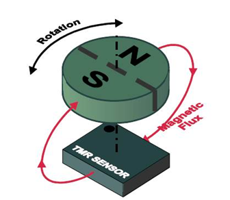

<title>TMR 磁鐵對位</title>
<script>try{document.documentElement.setAttribute('data-lang','bi')}catch(_){}</script>
<link rel="preconnect" href="https://fonts.googleapis.com">
<link rel="preconnect" href="https://fonts.gstatic.com" crossorigin>
<link rel="stylesheet" href="https://fonts.googleapis.com/css2?family=IBM+Plex+Mono:wght@400;500&family=Noto+Sans+TC:wght@400;500;700&display=swap">
<style>
/* Layout: 單欄閱讀軸，結論在前；誤差總表與校正階梯在互動實驗之前。
   色彩取自磁學慣例：N 極朱紅、S 極藍；兩路訊號青與紫；誤差琥珀，校正後綠。
   語言：html[data-lang] = zh | en | bi；.zh / .en 由 CSS 切換。 */
:root{
  --bg:#edf1f4;--panel:#f8fafb;--soft:#e2e9ee;--ink:#13202b;--muted:#566676;--line:#cdd7de;--grid:#dce3e9;
  --north:#d2412e;--south:#2b69b0;--cos:#0e7490;--sin:#7c4fd0;--raw:#b45309;--good:#15803d;--accent:#0e7490;--on-accent:#ffffff;
  --f-sans:"Noto Sans TC","PingFang TC","Microsoft JhengHei",system-ui,sans-serif;
  --f-mono:"IBM Plex Mono",ui-monospace,"SFMono-Regular",Menlo,Consolas,monospace;
}
@media (prefers-color-scheme: dark){
  :root:not([data-theme="light"]){
    --bg:#0e151c;--panel:#141d26;--soft:#1b2833;--ink:#e4ebf1;--muted:#93a3b2;--line:#27353f;--grid:#202c36;
    --north:#ef6b57;--south:#5d9ce3;--cos:#2dc4de;--sin:#a98bf2;--raw:#f0a030;--good:#4cc76f;--accent:#2dc4de;--on-accent:#06222a;
    color-scheme:dark;
  }
}
:root[data-theme="dark"]{
  --bg:#0e151c;--panel:#141d26;--soft:#1b2833;--ink:#e4ebf1;--muted:#93a3b2;--line:#27353f;--grid:#202c36;
  --north:#ef6b57;--south:#5d9ce3;--cos:#2dc4de;--sin:#a98bf2;--raw:#f0a030;--good:#4cc76f;--accent:#2dc4de;--on-accent:#06222a;
  color-scheme:dark;
}
*{box-sizing:border-box}
html{-webkit-text-size-adjust:100%}
body{margin:0;background:var(--bg);color:var(--ink);font:400 15px/1.8 var(--f-sans)}
.wrap{max-width:820px;margin-inline:auto;padding-block:28px 72px;padding-inline:16px}
a{color:var(--accent);text-underline-offset:3px}
:focus-visible{outline:2px solid var(--accent);outline-offset:2px}

/* 語言切換 */
html[data-lang="zh"] .en{display:none!important}
html[data-lang="en"] .zh{display:none!important}
html[data-lang="bi"] .en{color:var(--muted)}
html[data-lang="bi"] span.zh+span.en::before{content:" · "}
html[data-lang="bi"] p.en,html[data-lang="bi"] li.en,html[data-lang="bi"] div.en{font-size:13.5px;line-height:1.7;margin-top:-4px}
html[data-lang="bi"] h1 .en,html[data-lang="bi"] h2 .en{display:block;font-size:.62em;font-weight:500;line-height:1.4;margin-top:2px}
html[data-lang="bi"] h1 span.zh+span.en::before,html[data-lang="bi"] h2 span.zh+span.en::before{content:none}

.topbar{display:flex;justify-content:space-between;align-items:center;gap:12px;flex-wrap:wrap}
.langsw{display:inline-flex;border:1px solid var(--line);border-radius:4px;overflow:hidden}
.langsw button{font:500 12.5px/1 var(--f-sans);padding:8px 12px;border:0;background:var(--soft);color:var(--ink);cursor:pointer}
.langsw button+button{border-left:1px solid var(--line)}
.langsw button[aria-pressed="true"]{background:var(--accent);color:var(--on-accent)}
.eyebrow{font:500 11px/1.4 var(--f-mono);letter-spacing:.14em;text-transform:uppercase;color:var(--accent)}
h1{font:700 32px/1.2 var(--f-sans);margin:10px 0 12px;letter-spacing:.01em;text-wrap:balance}
h2{font:700 21px/1.35 var(--f-sans);margin:6px 0 8px;text-wrap:balance}
h3{font:700 16px/1.4 var(--f-sans);margin:26px 0 6px}
p{margin:10px 0}
.lede{color:var(--muted);max-width:66ch;margin-top:0}
.legendline{display:flex;flex-wrap:wrap;gap:6px 18px;font-size:12.5px;color:var(--muted);margin-top:18px;line-height:1.7}
.tag{display:inline-block;margin-right:8px;padding:0 6px;font:500 11px/1.7 var(--f-mono);border:1px solid currentColor;border-radius:3px;vertical-align:1px;white-space:nowrap}
.tag.fact{color:var(--good)}
.tag.infer{color:var(--raw)}
.tag.model{color:var(--sin)}
.verdict{margin-top:26px;border-top:1px solid var(--line)}
.verdict .row{display:grid;grid-template-columns:72px minmax(0,1fr);gap:12px;padding:14px 0;border-bottom:1px solid var(--line)}
.verdict .k{font-weight:700;color:var(--accent);font-size:14px;padding-top:1px;line-height:1.5}
.verdict .k .en{display:block;font-size:11px;font-weight:500}
.verdict .k span.zh+span.en::before{content:none}
.verdict p{margin:0 0 4px}
.go{font-size:13px}
section{margin-top:54px;scroll-margin-top:16px}
.panel{background:var(--panel);border:1px solid var(--line);border-radius:6px;padding:16px;margin-top:16px}
.cols{display:grid;grid-template-columns:repeat(auto-fit,minmax(min(100%,270px),1fr));gap:16px 22px;align-items:start}
.cols>*{min-width:0}
.fig{width:100%;max-width:340px;justify-self:center}
svg{display:block;width:100%;height:auto}

/* 示意圖：原圖白底，深色模式也放在淺色底上 */
.photo{margin:16px 0;display:grid;justify-items:center;gap:8px}
.photo img{display:block;width:100%;max-width:330px;height:auto;background:#fff;border:1px solid var(--line);border-radius:6px;padding:8px}
.photo figcaption{font-size:12.5px;color:var(--muted);line-height:1.7;max-width:62ch;text-align:center}
html[data-lang="bi"] .photo figcaption span.zh+span.en::before{content:"";display:block}
/* 規格重點 */
.specs{display:grid;grid-template-columns:repeat(auto-fit,minmax(min(100%,240px),1fr));gap:12px}
.spec{background:var(--panel);border:1px solid var(--line);border-radius:6px;padding:12px 14px;min-width:0}
.spec .num{font:500 20px/1.3 var(--f-mono);color:var(--ink);font-variant-numeric:tabular-nums}
.spec .what{font-size:12.5px;color:var(--muted);line-height:1.5;margin-bottom:6px}
.spec p{font-size:13.5px;margin:6px 0 0;line-height:1.65}
.spec p.en{font-size:12.5px}

/* 誤差來源卡片 */
.grp{display:flex;align-items:baseline;gap:10px;margin:30px 0 4px;padding-bottom:6px;border-bottom:2px solid var(--ink)}
.grp .gid{font:700 13px var(--f-mono);color:var(--on-accent);background:var(--accent);padding:1px 8px;border-radius:3px}
.grp h3{margin:0}
.src{border-bottom:1px solid var(--line);padding:14px 0}
.src .hd{display:flex;gap:10px;align-items:baseline;flex-wrap:wrap}
.src .sid{font:500 12px var(--f-mono);color:var(--accent);min-width:26px}
.src .ttl{font-weight:700;font-size:15px}
.kv{display:grid;grid-template-columns:96px minmax(0,1fr);gap:2px 12px;margin-top:6px;font-size:14px}
.kv dt{color:var(--muted);font-size:12.5px;padding-top:2px;line-height:1.5}
.kv dt .en{display:block;font-size:11px}
.kv dt span.zh+span.en::before{content:none}
.kv dd{margin:0 0 6px;min-width:0}
.kv dd p{margin:0}
@media (max-width:480px){.kv{grid-template-columns:1fr}.kv dt{padding-top:6px}}
.chip{display:inline-block;font:500 11.5px/1.6 var(--f-mono);padding:0 7px;border-radius:3px;margin:0 6px 2px 0;border:1px solid var(--line);background:var(--soft);white-space:nowrap}
.chip.h0{border-color:var(--muted)}
.chip.h1{border-color:var(--cos);color:var(--cos)}
.chip.h2{border-color:var(--sin);color:var(--sin)}
.chip.hn{border-color:var(--north);color:var(--north)}
.chip.rnd{border-color:var(--raw);color:var(--raw)}
.chip.cal{border-color:var(--good);color:var(--good)}

/* 校正階梯 */
.ladder{counter-reset:none;margin-top:12px;border-top:1px solid var(--line)}
.step{display:grid;grid-template-columns:52px minmax(0,1fr);gap:12px;padding:14px 0;border-bottom:1px solid var(--line)}
.step .lv{font:700 18px/1.3 var(--f-mono);color:var(--good)}
.step .lv small{display:block;font:400 11px var(--f-sans);color:var(--muted)}
.step b{font-size:15px}
.step p{margin:4px 0}
pre{font:12.5px/1.6 var(--f-mono);background:var(--soft);border:1px solid var(--line);border-radius:4px;padding:10px 12px;overflow-x:auto;margin:8px 0;white-space:pre}
code{font:13px var(--f-mono);background:var(--soft);padding:0 4px;border-radius:3px}
.flow{margin:10px 0 0;padding-left:22px}
.flow li{margin:6px 0}
.flow li.en{list-style:none;margin-left:0}
.callout{border-left:3px solid var(--raw);padding:4px 0 4px 12px;margin:14px 0}

/* 互動控制 */
.ctlgrid{display:grid;grid-template-columns:repeat(auto-fit,minmax(min(100%,230px),1fr));gap:2px 26px}
.ctl{display:grid;gap:2px;margin:8px 0}
.ctl .top{display:flex;justify-content:space-between;align-items:baseline;gap:12px;font-size:13.5px;line-height:1.5}
.ctl output{font:500 13px var(--f-mono);font-variant-numeric:tabular-nums;white-space:nowrap}
input[type=range]{width:100%;margin:0;height:28px;accent-color:var(--accent)}
.btns{display:flex;flex-wrap:wrap;gap:8px;margin-top:10px}
.btn{font:500 13px/1.3 var(--f-sans);padding:9px 14px;border:1px solid var(--line);background:var(--soft);color:var(--ink);border-radius:4px;cursor:pointer}
.btn:hover{border-color:var(--accent)}
.btn.primary{background:var(--accent);border-color:var(--accent);color:var(--on-accent)}
.btn.primary .en{color:inherit;opacity:.85}
.checks{display:flex;flex-wrap:wrap;gap:6px 18px;margin:10px 0 2px;font-size:13.5px}
.checks label{display:inline-flex;align-items:center;gap:6px;cursor:pointer}
.checks input{accent-color:var(--accent);width:16px;height:16px;margin:0}
.seg{display:inline-flex;position:relative;border:1px solid var(--line);border-radius:4px;overflow:hidden;margin:6px 0 4px;flex-wrap:wrap}
.seg input{position:absolute;opacity:0;pointer-events:none}
.seg label{padding:8px 14px;font-size:13px;cursor:pointer;background:var(--soft)}
.seg input:checked+label{background:var(--accent);color:var(--on-accent)}
.seg input:checked+label .en{color:inherit;opacity:.85}
.seg input:focus-visible+label{outline:2px solid var(--accent);outline-offset:-2px}
.reads{display:grid;grid-template-columns:repeat(auto-fit,minmax(130px,1fr));gap:10px 18px;margin-top:14px}
.rd{border-top:1px solid var(--line);padding-top:6px;min-width:0}
.rd .l{font-size:12px;color:var(--muted);line-height:1.45}
.rd .v{font:500 18px/1.5 var(--f-mono);font-variant-numeric:tabular-nums;overflow-wrap:anywhere}
.v.ok{color:var(--good)}
.v.bad{color:var(--raw)}
.legend{display:flex;flex-wrap:wrap;gap:4px 16px;font-size:12px;color:var(--muted);margin-top:8px}
.legend>span{display:inline-flex;align-items:center;gap:6px}
.sw{display:inline-block;width:18px;height:0;border-top:3px solid currentColor}
.sw.dash{border-top-style:dashed}
.cap{font-size:12.5px;color:var(--muted);margin:8px 0 0;line-height:1.7}
.note{margin-top:14px;padding-top:10px;border-top:1px dashed var(--line);font-size:14px}
.status{margin:10px 0 0;font-size:14px;min-height:1.8em}
footer{margin-top:60px;border-top:1px solid var(--line);padding-top:18px;font-size:13px;color:var(--muted)}
footer ul{padding-left:18px;margin:8px 0}
footer li{margin:2px 0}
/* SVG 元件 */
.t{font:12px var(--f-mono);fill:var(--muted)}
.grid{stroke:var(--grid);stroke-width:1}
.grid.zero{stroke:var(--muted);stroke-opacity:.55}
.ln{fill:none;stroke-width:2;stroke-linejoin:round;stroke-linecap:round}
.c-cos{stroke:var(--cos)}.c-sin{stroke:var(--sin)}.c-raw{stroke:var(--raw)}.c-good{stroke:var(--good)}.c-acc{stroke:var(--accent)}
.cursor{stroke:var(--ink);stroke-width:1;stroke-dasharray:3 3;fill:none}
.d-cos{fill:var(--cos)}.d-sin{fill:var(--sin)}.d-acc{fill:var(--accent)}
.bar-raw{fill:var(--raw)}.bar-fix{fill:var(--good)}
.axes line{stroke:var(--muted);stroke-width:1}
.axes path{fill:var(--muted)}
.mn{fill:var(--north);fill-opacity:.2;stroke:var(--north);stroke-width:1.5}
.ms{fill:var(--south);fill-opacity:.2;stroke:var(--south);stroke-width:1.5}
.neutral{stroke:var(--ink);stroke-width:1;stroke-dasharray:4 3}
.marrow{stroke:var(--ink);stroke-width:1.6}
.marrowh{fill:var(--ink)}
.nl{font:700 16px var(--f-mono);fill:var(--north);paint-order:stroke;stroke:var(--panel);stroke-width:4px}
.sl{font:700 16px var(--f-mono);fill:var(--south);paint-order:stroke;stroke:var(--panel);stroke-width:4px}
.sensor{fill:none;stroke:var(--ink);stroke-width:1.2;stroke-dasharray:3 2}
.arc{fill:none;stroke:var(--accent);stroke-width:2}
.arcl{font:500 11px var(--f-mono);fill:var(--accent);paint-order:stroke;stroke:var(--panel);stroke-width:3px}
.svgcap{font:11px var(--f-sans);fill:var(--muted)}
.sdot{fill:var(--accent);stroke:var(--panel);stroke-width:2}
.cross{stroke:var(--accent);stroke-width:1}
.mbody-n{fill:var(--north);fill-opacity:.2;stroke:var(--north);stroke-width:1.5}
.mbody-s{fill:var(--south);fill-opacity:.2;stroke:var(--south);stroke-width:1.5}
.scale{stroke:var(--ink);stroke-width:1.5}
@media (max-width:420px){h1{font-size:27px}}
</style>
<main class="wrap">
<header>
  <div class="topbar">
    <div class="eyebrow">TMR angle sensing · NVE AAT003 · on-axis</div>
    <div class="langsw" role="group" aria-label="Language 語言">
      <button type="button" data-l="zh" aria-pressed="false">中文</button>
      <button type="button" data-l="en" aria-pressed="false">English</button>
      <button type="button" data-l="bi" aria-pressed="true">雙語 Both</button>
    </div>
  </div>
  <h1><span class="zh">TMR 磁鐵對位與角度誤差</span><span class="en">TMR Magnet Alignment &amp; Angle Error</span></h1>
  <p class="lede zh">以我們實際使用的 NVE AAT003（TMR，正弦／餘弦雙半橋輸出）與同軸（on-axis）徑向充磁磁鐵為對象，整理角度誤差的來源（組裝、磁鐵、感測器與電路），以及每一種誤差可以用哪一層校正處理。後半段是四個可以拖動的實驗。</p>
  <p class="lede en">Built around the sensor we actually use, the NVE AAT003 (TMR, sine/cosine half-bridge outputs), with an on-axis, diametrically magnetized magnet. It maps where angle error comes from (assembly, magnet, sensor and circuit) and which calibration layer removes each error. Four interactive experiments follow.</p>
  <div class="legendline">
    <span><span class="tag fact"><span class="zh">事實</span><span class="en">Fact</span></span><span class="zh">公開資料可查，附來源</span><span class="en">from a cited public source</span></span>
    <span><span class="tag infer"><span class="zh">推論</span><span class="en">Inference</span></span><span class="zh">依物理關係推得，未找到來源明文</span><span class="en">derived from physics, no explicit source found</span></span>
    <span><span class="tag model"><span class="zh">本頁模型</span><span class="en">Model</span></span><span class="zh">由本頁數值模型計算</span><span class="en">computed by this page's model</span></span>
  </div>
</header>

<div class="verdict" role="list">
  <div class="row" role="listitem"><div class="k"><span class="zh">結論</span><span class="en">Bottom line</span></div><div>
    <p class="zh">AAT003 未校正時，光是規格允許的通道偏移（±10 mV/V）就可能造成約 9° 的誤差。偏移與增益校正是必要步驟，不是選配。</p>
    <p class="en">Uncalibrated, the AAT003's allowed channel offset (±10 mV/V) alone can cause about 9° of error. Offset and gain calibration are mandatory, not optional.</p>
    <a class="go" href="#aat"><span class="zh">AAT003 規格怎麼影響誤差 →</span><span class="en">How AAT003 specs drive error →</span></a></div></div>
  <div class="row" role="listitem"><div class="k"><span class="zh">來源</span><span class="en">Sources</span></div><div>
    <p class="zh">誤差分三大類：組裝（安裝轉角、偏心、氣隙、傾斜、軸的跳動）、磁鐵（充磁方向、分極界線、Br 與溫度），以及感測器與電路（偏移、增益、正交、非正弦性、ADC）。</p>
    <p class="en">Three families: assembly (mounting angle, eccentricity, airgap, tilt, shaft runout), magnet (magnetization direction, pole boundary, Br and temperature), and sensor/circuit (offset, gain, orthogonality, nonsinusoidality, ADC).</p>
    <a class="go" href="#budget"><span class="zh">到「誤差來源總表」 →</span><span class="en">Go to the error-source map →</span></a></div></div>
  <div class="row" role="listitem"><div class="k"><span class="zh">校正</span><span class="en">Calibration</span></div><div>
    <p class="zh">依誤差曲線的形狀選校正：常數用零點，一次與二次諧波用最小／最大值或橢圓擬合，偏心與磁鐵場形的殘差用多點或諧波校正。非重複的誤差無法校正，只能靠機構與磁路設計。</p>
    <p class="en">Match the calibration to the error's shape: a constant needs a zero point; 1st- and 2nd-harmonic errors need min/max or ellipse fitting; residuals from eccentricity and field shape need multipoint or harmonic correction. Non-repeatable error cannot be calibrated; only mechanical and magnetic design can reduce it.</p>
    <a class="go" href="#cal"><span class="zh">到「校正階梯」 →</span><span class="en">Go to the calibration ladder →</span></a></div></div>
</div>

<!-- AAT003 -->
<section id="aat">
  <div class="eyebrow">AAT003 datasheet → error</div>
  <h2><span class="zh">AAT003 規格對角度誤差的意義</span><span class="en">What the AAT003 specs mean for angle error</span></h2>
  <p class="zh"><span class="tag fact">事實</span>AAT003 內有四個 TMR 電阻，每 90° 一個，接成兩組半橋，輸出正弦與餘弦。輸出以 Vcc/2 為中心，與電源成比例。磁場每轉一圈，輸出一個週期，因此可判斷 360° 絕對位置（NVE AAT003 規格書）。</p>
  <p class="en"><span class="tag fact">Fact</span>The AAT003 has four TMR resistors at 90° intervals, wired as two half-bridges that output sine and cosine. Outputs are centered on Vcc/2 and ratiometric to the supply. One output cycle per revolution gives absolute 360° position (NVE AAT003 datasheet).</p>
  <figure class="photo">
    
    <figcaption><span class="zh">同軸配置：徑向充磁圓盤磁鐵位於感測器正上方，N、S 分在直徑兩側，磁通在感測器平面內隨磁鐵旋轉（NVE AAT003 規格書圖 1）。</span><span class="en">On-axis setup: a diametrically magnetized disk sits centered above the sensor, with N and S on opposite halves, and the in-plane flux turns with the magnet (NVE AAT003 datasheet, Fig. 1).</span></figcaption>
  </figure>
  <div class="specs">
    <div class="spec"><div class="what"><span class="zh">工作磁場</span><span class="en">Required field</span></div><div class="num">30–200 Oe</div>
      <p class="zh"><span class="tag fact">事實</span>空氣中約等於 3–20 mT。磁鐵與氣隙的設計，要讓溫度與公差的最壞情況都落在這個範圍內。</p>
      <p class="en"><span class="tag fact">Fact</span>That is about 3–20 mT in air. Choose the magnet and airgap so worst-case temperature and tolerance stay inside this window.</p></div>
    <div class="spec"><div class="what"><span class="zh">偏移電壓</span><span class="en">Offset voltage</span></div><div class="num">±10 mV/V</div>
      <p class="zh"><span class="tag model">本頁模型</span>振幅最小為 65 mV/V（Vpp 130 的一半），偏移最多占振幅 15%，未校正誤差約 8.9°。</p>
      <p class="en"><span class="tag model">Model</span>The minimum amplitude is 65 mV/V (half of the 130 Vpp), so the offset can reach 15% of the amplitude. That is about 8.9° of error uncalibrated.</p></div>
    <div class="spec"><div class="what"><span class="zh">峰對峰輸出</span><span class="en">Peak-to-peak output</span></div><div class="num">130–200 mV/V</div>
      <p class="zh"><span class="tag infer">推論</span>規格書沒有規範 sin、cos 兩通道的振幅匹配。增益不匹配 20% 時，誤差約 5.2°（本頁模型），所以要逐顆量測。</p>
      <p class="en"><span class="tag infer">Inference</span>The datasheet does not specify how well the sin and cos channel amplitudes match. A 20% gain mismatch gives about 5.2° of error (this page's model), so measure every unit.</p></div>
    <div class="spec"><div class="what"><span class="zh">非正弦性</span><span class="en">Nonsinusoidality</span></div><div class="num">±1.5 % p-p</div>
      <p class="zh"><span class="tag model">本頁模型</span>等於振幅的 3%。如果全部是三次諧波，誤差約 1.7°，偏移、增益、正交三項校正都消除不了，要用多點校正。</p>
      <p class="en"><span class="tag model">Model</span>This equals 3% of the amplitude. If it is all 3rd harmonic, the error is about 1.7°. Offset, gain and orthogonality correction cannot remove it; multipoint calibration can.</p></div>
    <div class="spec"><div class="what"><span class="zh">可重複性</span><span class="en">Repeatability</span></div><div class="num">±0.5° / ±3°</div>
      <p class="zh"><span class="tag fact">事實</span>±0.5° 是固定氣隙（場強固定）的值，±3° 是場強在規格範圍內變動時的值。這是校正後的下限。氣隙或溫度改變了場強，校正表就不再準確。</p>
      <p class="en"><span class="tag fact">Fact</span>±0.5° holds at a fixed airgap (constant field); ±3° holds when the field varies across its spec range. This is the floor after calibration: if the airgap or temperature changes the field strength, the calibration table is no longer accurate.</p></div>
    <div class="spec"><div class="what"><span class="zh">10-bit ADC 解析度</span><span class="en">10-bit ADC resolution</span></div><div class="num">≈ 0.56–0.86°</div>
      <p class="zh"><span class="tag infer">推論</span>直接接 10-bit ADC 時，振幅只有約 67–102 LSB，每 LSB 約等於 1/振幅 rad。可以用平均或更高位元的 ADC 改善。</p>
      <p class="en"><span class="tag infer">Inference</span>On a direct 10-bit ADC the amplitude is only about 67–102 LSB, and one LSB is about 1/amplitude rad. Averaging or a higher-resolution ADC improves this.</p></div>
  </div>
  <p class="zh"><span class="tag fact">事實</span>規格書以「從封裝頂面看順時針」為角度增加的方向。輸出溫度係數 −0.13 %/°C，兩通道同時變化，atan2 取比值後抵消。規格書也建議用最小／最大值做振幅與偏移校正，必要時再做多點校正。</p>
  <p class="en"><span class="tag fact">Fact</span>The datasheet defines increasing angle as clockwise viewed from the top of the package. The output tempco of −0.13 %/°C moves both channels together, so it cancels in the atan2 ratio. The datasheet also recommends min/max calibration for amplitude and offset, and multipoint calibration when needed.</p>
</section>

<!-- 誤差來源總表 -->
<section id="budget">
  <div class="eyebrow">error budget</div>
  <h2><span class="zh">角度誤差來源總表</span><span class="en">Angle error sources</span></h2>
  <p class="zh">每一項列出機制、誤差曲線的形狀（以磁鐵轉一圈的諧波階次表示），以及能處理它的校正層級（L0–L5，見下一節）。誤差曲線的形狀決定能用哪一層校正。</p>
  <p class="en">Each entry lists the mechanism, the error's shape (as harmonic order over one magnet revolution), and the calibration layer that handles it (L0–L5, next section). The shape of the error curve decides which calibration can remove it.</p>
  <div class="legend" style="margin-top:10px">
    <span><span class="chip h0">0</span><span class="zh">常數</span><span class="en">constant</span></span>
    <span><span class="chip h1">1×</span><span class="zh">一次諧波</span><span class="en">1st harmonic</span></span>
    <span><span class="chip h2">2×</span><span class="zh">二次諧波</span><span class="en">2nd harmonic</span></span>
    <span><span class="chip hn">n×</span><span class="zh">高次</span><span class="en">higher order</span></span>
    <span><span class="chip rnd">≈</span><span class="zh">非重複</span><span class="en">non-repeatable</span></span>
  </div>

  <div class="grp"><span class="gid">A</span><h3><span class="zh">組裝</span><span class="en">Assembly</span></h3></div>

  <div class="src"><div class="hd"><span class="sid">A1</span><span class="ttl"><span class="zh">磁鐵安裝轉角</span><span class="en">Magnet mounting angle</span></span></div>
    <dl class="kv">
      <dt><span class="zh">機制</span><span class="en">Mechanism</span></dt><dd><p class="zh"><span class="tag fact">事實</span>磁鐵裝到軸上時，N-S 方位是隨機的（ams AN000688）。</p><p class="en"><span class="tag fact">Fact</span>A magnet pressed onto a shaft ends up with a random N-S orientation (ams AN000688).</p></dd>
      <dt><span class="zh">誤差</span><span class="en">Signature</span></dt><dd><span class="chip h0">0</span><span class="zh">整圈相同的固定角度</span><span class="en">the same fixed angle all the way round</span></dd>
      <dt><span class="zh">校正</span><span class="en">Fix</span></dt><dd><span class="chip cal">L1</span><span class="zh">在機械零位寫入零點。拆裝或重新壓入磁鐵後，要重新寫入。</span><span class="en">Write the zero at the mechanical zero. Rewrite it after any rework or magnet re-press.</span></dd>
    </dl></div>

  <div class="src"><div class="hd"><span class="sid">A2</span><span class="ttl"><span class="zh">感測器偏離旋轉軸（偏心）</span><span class="en">Sensor off the rotation axis (eccentricity)</span></span></div>
    <dl class="kv">
      <dt><span class="zh">機制</span><span class="en">Mechanism</span></dt><dd><p class="zh">由 PCB 定位、SMT 置件、軸與殼體的同心度，以及晶片在封裝內的位置累加而成。感測器偏離磁鐵中心後，看到的場方向不再等於磁鐵轉角。</p><p class="en">PCB location, SMT placement, shaft-to-housing concentricity and die position inside the package all add up. Off center, the field direction the sensor sees no longer equals the magnet angle.</p></dd>
      <dt><span class="zh">誤差</span><span class="en">Signature</span></dt><dd><span class="chip h2">2×</span><p class="zh"><span class="tag model">本頁模型</span>同軸徑向充磁圓柱時為純二次諧波。<span class="tag fact">事實</span>直徑越小越敏感，偏心小於直徑 10% 時誤差經常低於 1°（TI SLYA079）。</p><p class="en"><span class="tag model">Model</span>For an on-axis diametric cylinder it is a pure 2nd harmonic. <span class="tag fact">Fact</span>Smaller diameters are more sensitive; eccentricity under 10% of the diameter often keeps error below 1° (TI SLYA079).</p></dd>
      <dt><span class="zh">校正</span><span class="en">Fix</span></dt><dd><span class="chip cal">L4</span><span class="zh">偏心若固定，可用多點或諧波校正消除。L2、L3 只處理訊號的偏移、增益與相位，不處理偏心。</span><span class="en">If the eccentricity is fixed, multipoint or harmonic correction removes it. L2 and L3 only fix signal offset, gain and phase, not eccentricity.</span></dd>
      <dt><span class="zh">設計</span><span class="en">Design</span></dt><dd><span class="zh">用定位銷或基準孔做公差疊加，讓 e/D 小於 10%，必要時加大磁鐵直徑。</span><span class="en">Stack up tolerances from locating pins or datum holes, keep e/D under 10%, and enlarge the magnet if needed.</span></dd>
    </dl></div>

  <div class="src"><div class="hd"><span class="sid">A3</span><span class="ttl"><span class="zh">磁鐵偏離軸心</span><span class="en">Magnet off-center on the shaft</span></span></div>
    <dl class="kv">
      <dt><span class="zh">機制</span><span class="en">Mechanism</span></dt><dd><p class="zh"><span class="tag infer">推論</span>磁鐵跟著軸一起轉。如果感測器正好在旋轉軸上，它在磁鐵座標中的位置固定不動，只會產生常數偏移，並讓場強下降。若同時有 A2，誤差主要由「感測器相對旋轉軸」的距離決定。</p><p class="en"><span class="tag infer">Inference</span>The magnet turns with the shaft. If the sensor sits exactly on the rotation axis, its position in the magnet's own frame stays fixed, so it sees only a constant offset and a weaker field. Together with A2, the error is set mainly by the sensor's distance from the rotation axis.</p></dd>
      <dt><span class="zh">誤差</span><span class="en">Signature</span></dt><dd><span class="chip h0">0</span><span class="chip h2">2×</span><span class="zh">與 A2 合併時</span><span class="en">when combined with A2</span></dd>
      <dt><span class="zh">校正</span><span class="en">Fix</span></dt><dd><span class="chip cal">L1</span><span class="chip cal">L4</span><span class="zh">另外確認場強仍在 3–20 mT 內。</span><span class="en">Also confirm the field stays within 3–20 mT.</span></dd>
    </dl></div>

  <div class="src"><div class="hd"><span class="sid">A4</span><span class="ttl"><span class="zh">氣隙</span><span class="en">Airgap</span></span></div>
    <dl class="kv">
      <dt><span class="zh">機制</span><span class="en">Mechanism</span></dt><dd><p class="zh"><span class="tag fact">事實</span>氣隙決定場強。規格書的圖 2 顯示，氣隙 3–5 mm 時輸出波形幾乎重疊（12 mm × 4 mm 分極鐵氧體），但場強變動時，可重複性從 ±0.5° 放寬到 ±3°。</p><p class="en"><span class="tag fact">Fact</span>The airgap sets the field strength. Datasheet Fig. 2 shows nearly identical waveforms at 3–5 mm (12 mm × 4 mm split-pole ferrite), but repeatability loosens from ±0.5° to ±3° when the field varies.</p></dd>
      <dt><span class="zh">誤差</span><span class="en">Signature</span></dt><dd><span class="chip rnd">≈</span><span class="zh">隨場強改變，校正後仍會變動</span><span class="en">changes with field strength, even after calibration</span></dd>
      <dt><span class="zh">校正</span><span class="en">Fix</span></dt><dd><span class="zh">在最終組裝的氣隙下校正。之後氣隙再改變，無法補償。</span><span class="en">Calibrate at the final assembled airgap. Later airgap changes cannot be compensated.</span></dd>
      <dt><span class="zh">設計</span><span class="en">Design</span></dt><dd><span class="zh">以最小／最大氣隙乘上 Br 的溫度範圍計算場強，確認都在 30–200 Oe 內（可用 NVE On-Axis 計算器）。軸向竄動要列入氣隙公差。</span><span class="en">Compute the field at min/max airgap across the Br temperature range and check it stays within 30–200 Oe (the NVE On-Axis calculator helps). Include axial play in the airgap tolerance.</span></dd>
    </dl></div>

  <div class="src"><div class="hd"><span class="sid">A5</span><span class="ttl"><span class="zh">傾斜（磁鐵或 PCB）</span><span class="en">Tilt (magnet or PCB)</span></span></div>
    <dl class="kv">
      <dt><span class="zh">機制</span><span class="en">Mechanism</span></dt><dd><p class="zh"><span class="tag infer">推論</span>感測平面傾斜時，平面內的場投影成橢圓，效果類似增益不匹配。偏心處若有軸向分量 Bz，傾斜會把它投影成平面內的固定向量。小角度時，傾斜的影響通常比偏心小。</p><p class="en"><span class="tag infer">Inference</span>A tilted sensing plane sees the in-plane field as an ellipse, which acts like gain mismatch. Where eccentricity leaves an axial component Bz, tilt projects it into a fixed in-plane vector. At small angles, tilt usually matters less than eccentricity.</p></dd>
      <dt><span class="zh">誤差</span><span class="en">Signature</span></dt><dd><span class="chip h2">2×</span><span class="chip h1">1×</span></dd>
      <dt><span class="zh">校正</span><span class="en">Fix</span></dt><dd><span class="chip cal">L3</span><span class="chip cal">L4</span><span class="zh">設計上訂定平行度公差。</span><span class="en">Set a parallelism tolerance in the design.</span></dd>
    </dl></div>

  <div class="src"><div class="hd"><span class="sid">A6</span><span class="ttl"><span class="zh">軸的跳動、竄動與軸承間隙</span><span class="en">Shaft runout, axial play and bearing clearance</span></span></div>
    <dl class="kv">
      <dt><span class="zh">機制</span><span class="en">Mechanism</span></dt><dd><p class="zh"><span class="tag infer">推論</span>每圈重複的跳動，形同會轉動的偏心，可以被多點校正學到。間隙會隨負載與轉向改變，屬於非重複誤差，正轉、反轉之間會出現遲滯。</p><p class="en"><span class="tag infer">Inference</span>Runout that repeats every turn acts like rotating eccentricity, and multipoint calibration can learn it. Clearance shifts with load and direction, so it is non-repeatable and shows up as hysteresis between CW and CCW.</p></dd>
      <dt><span class="zh">誤差</span><span class="en">Signature</span></dt><dd><span class="chip h1">1×</span><span class="chip rnd">≈</span></dd>
      <dt><span class="zh">校正</span><span class="en">Fix</span></dt><dd><span class="zh">重複的部分用 L4；間隙只能靠預壓軸承或縮小配合間隙。驗證時要正、反轉都量。</span><span class="en">L4 handles the repeatable part; clearance needs bearing preload or tighter fits. Verify in both directions.</span></dd>
    </dl></div>

  <div class="src"><div class="hd"><span class="sid">A7</span><span class="ttl"><span class="zh">旋轉方向與正負號</span><span class="en">Rotation direction and sign</span></span></div>
    <dl class="kv">
      <dt><span class="zh">機制</span><span class="en">Mechanism</span></dt><dd><p class="zh"><span class="tag fact">事實</span>AAT003 以「從頂面看順時針」為角度增加。<span class="tag infer">推論</span>感測器放在 PCB 背面，或從磁鐵那一側定義方向時，正負號會相反。</p><p class="en"><span class="tag fact">Fact</span>The AAT003 counts clockwise viewed from the top as increasing. <span class="tag infer">Inference</span>Mount it on the PCB's back side, or define direction from the magnet side, and the sign flips.</p></dd>
      <dt><span class="zh">誤差</span><span class="en">Signature</span></dt><dd><span class="zh">斜率變成 −1，誤差隨角度線性增加</span><span class="en">slope of −1; error grows linearly with angle</span></dd>
      <dt><span class="zh">校正</span><span class="en">Fix</span></dt><dd><span class="zh">在韌體設定方向符號，並在產線測試確認。</span><span class="en">Set a direction sign in firmware and check it on the production line.</span></dd>
    </dl></div>

  <div class="src"><div class="hd"><span class="sid">A8</span><span class="ttl"><span class="zh">周邊鐵磁件與外部雜散磁場</span><span class="en">Nearby ferromagnetic parts and stray fields</span></span></div>
    <dl class="kv">
      <dt><span class="zh">機制</span><span class="en">Mechanism</span></dt><dd><p class="zh"><span class="tag infer">推論</span>均勻的外部場會疊加在磁鐵場上，誤差約為 B<sub>雜散</sub>／B<sub>磁鐵</sub>（rad）。例如地磁 0.05 mT、磁鐵場 10 mT，約 0.29°。鋼軸、螺絲、外殼會扭曲場形。</p><p class="en"><span class="tag infer">Inference</span>A uniform external field adds to the magnet's field; the error is about B<sub>stray</sub>/B<sub>magnet</sub> rad. Earth's 0.05 mT against a 10 mT magnet field gives about 0.29°. Steel shafts, screws and housings distort the field shape.</p></dd>
      <dt><span class="zh">誤差</span><span class="en">Signature</span></dt><dd><span class="chip h1">1×</span><span class="chip hn">n×</span><span class="chip rnd">≈</span></dd>
      <dt><span class="zh">校正</span><span class="en">Fix</span></dt><dd><span class="zh">固定的部分用 L4。會隨時間變化的（馬達電流、喇叭磁鐵、使用者手持物）無法校正，只能提高工作場強、拉開距離或改用非磁性材料。</span><span class="en">L4 handles the fixed part. Time-varying sources (motor current, speaker magnets, objects users hold) cannot be calibrated: raise the working field, add distance, or use non-magnetic materials.</span></dd>
    </dl></div>

  <div class="grp"><span class="gid">B</span><h3><span class="zh">磁鐵</span><span class="en">Magnet</span></h3></div>

  <div class="src"><div class="hd"><span class="sid">B1</span><span class="ttl"><span class="zh">充磁方向偏差</span><span class="en">Magnetization direction error</span></span></div>
    <dl class="kv">
      <dt><span class="zh">機制</span><span class="en">Mechanism</span></dt><dd><p class="zh"><span class="tag infer">推論</span>充磁方向不是純徑向、帶有軸向分量時，在中心不影響平面場，但遇到偏心或傾斜時，軸向分量會投影進平面。</p><p class="en"><span class="tag infer">Inference</span>If magnetization is not purely diametric and has an axial component, the in-plane field at the center is unaffected, but eccentricity or tilt projects the axial part into the plane.</p></dd>
      <dt><span class="zh">誤差</span><span class="en">Signature</span></dt><dd><span class="chip h1">1×</span><span class="chip h2">2×</span></dd>
      <dt><span class="zh">校正</span><span class="en">Fix</span></dt><dd><span class="chip cal">L4</span><span class="zh">在採購規格寫明充磁角度公差。</span><span class="en">Specify the magnetization-angle tolerance in the purchase spec.</span></dd>
    </dl></div>

  <div class="src"><div class="hd"><span class="sid">B2</span><span class="ttl"><span class="zh">分極界線偏移或不對稱</span><span class="en">Pole boundary offset or asymmetry</span></span></div>
    <dl class="kv">
      <dt><span class="zh">機制</span><span class="en">Mechanism</span></dt><dd><p class="zh"><span class="tag infer">推論</span>分極界線平行偏離圓心時，場形改變，誤差隨角度變化，單一零點無法消除。我沒有找到公開規範的界線偏移量。</p><p class="en"><span class="tag infer">Inference</span>A pole boundary shifted parallel to the center changes the field shape, so the error varies with angle and a single zero cannot remove it. No published tolerance for this was found.</p></dd>
      <dt><span class="zh">誤差</span><span class="en">Signature</span></dt><dd><span class="chip h2">2×</span><span class="chip hn">n×</span></dd>
      <dt><span class="zh">校正</span><span class="en">Fix</span></dt><dd><span class="chip cal">L4</span><span class="zh">向供應商約定場形公差，進料時用量測治具抽檢。</span><span class="en">Agree a field-shape tolerance with the supplier and sample incoming lots on a fixture.</span></dd>
    </dl></div>

  <div class="src"><div class="hd"><span class="sid">B3</span><span class="ttl"><span class="zh">磁化不均勻</span><span class="en">Non-uniform magnetization</span></span></div>
    <dl class="kv">
      <dt><span class="zh">機制</span><span class="en">Mechanism</span></dt><dd><p class="zh"><span class="tag infer">推論</span>燒結密度不均、黏結鐵氧體的粒子分布不均，或充磁治具不對稱，都會讓場不再是單純的二極場。</p><p class="en"><span class="tag infer">Inference</span>Uneven sintered density, uneven particles in bonded ferrite, or an asymmetric magnetizing fixture make the field depart from a clean dipole.</p></dd>
      <dt><span class="zh">誤差</span><span class="en">Signature</span></dt><dd><span class="chip hn">n×</span></dd>
      <dt><span class="zh">校正</span><span class="en">Fix</span></dt><dd><span class="chip cal">L4</span></dd>
    </dl></div>

  <div class="src"><div class="hd"><span class="sid">B4</span><span class="ttl"><span class="zh">尺寸與形狀</span><span class="en">Size and shape</span></span></div>
    <dl class="kv">
      <dt><span class="zh">機制</span><span class="en">Mechanism</span></dt><dd><p class="zh"><span class="tag fact">事實</span>只要在感測器位置產生均勻場，形狀不影響性能（Allegro AN120）。感測器很靠近磁鐵時，形狀會影響場形（NVE）。同樣的偏心下，直徑越小誤差越大（TI SLYA079）。</p><p class="en"><span class="tag fact">Fact</span>Shape does not matter as long as the field at the sensor is uniform (Allegro AN120). Very close to the magnet, shape does affect the field (NVE). For the same eccentricity, smaller diameters give larger error (TI SLYA079).</p></dd>
      <dt><span class="zh">誤差</span><span class="en">Signature</span></dt><dd><span class="zh">放大 A2 的二次諧波</span><span class="en">amplifies the A2 2nd harmonic</span></dd>
      <dt><span class="zh">設計</span><span class="en">Design</span></dt><dd><span class="zh">直徑遠大於偏心公差。見下方「偏心、間距與形狀」實驗。</span><span class="en">Keep the diameter much larger than the eccentricity tolerance. See the eccentricity experiment below.</span></dd>
    </dl></div>

  <div class="src"><div class="hd"><span class="sid">B5</span><span class="ttl"><span class="zh">Br 公差與溫度</span><span class="en">Br tolerance and temperature</span></span></div>
    <dl class="kv">
      <dt><span class="zh">機制</span><span class="en">Mechanism</span></dt><dd><p class="zh"><span class="tag infer">推論</span>常見材料值：鐵氧體 Br 約 −0.2 %/°C，NdFeB 約 −0.12 %/°C（請以供應商規格為準）。鐵氧體從 −40 °C 到 125 °C，場強可能相差約 30%，可能跌出 30 Oe 或超過 200 Oe。</p><p class="en"><span class="tag infer">Inference</span>Typical material values are about −0.2 %/°C Br for ferrite and −0.12 %/°C for NdFeB (use the supplier's figures). Ferrite can shift about 30% between −40 °C and 125 °C, which can push the field below 30 Oe or above 200 Oe.</p></dd>
      <dt><span class="zh">誤差</span><span class="en">Signature</span></dt><dd><span class="chip rnd">≈</span><span class="zh">場強變化，對應規格的 ±3° 可重複性</span><span class="en">field-strength change, the ±3° repeatability case</span></dd>
      <dt><span class="zh">校正</span><span class="en">Fix</span></dt><dd><span class="chip cal">L5</span><span class="zh">只能部分補償。設計點放在 30–200 Oe 的中段。</span><span class="en">Only partly compensable. Put the design point mid-window.</span></dd>
    </dl></div>

  <div class="src"><div class="hd"><span class="sid">B6</span><span class="ttl"><span class="zh">退磁與老化</span><span class="en">Demagnetization and aging</span></span></div>
    <dl class="kv">
      <dt><span class="zh">機制</span><span class="en">Mechanism</span></dt><dd><p class="zh"><span class="tag infer">推論</span>高溫或強外場造成不可逆的場強下降，偏心處的場形也可能改變。</p><p class="en"><span class="tag infer">Inference</span>High temperature or strong external fields cause an irreversible loss of field strength and can also change the field shape off center.</p></dd>
      <dt><span class="zh">誤差</span><span class="en">Signature</span></dt><dd><span class="chip rnd">≈</span><span class="zh">隨時間漂移</span><span class="en">drifts over time</span></dd>
      <dt><span class="zh">設計</span><span class="en">Design</span></dt><dd><span class="zh">選用足夠的材料等級，做高溫儲存與壽命測試。</span><span class="en">Choose an adequate grade; run high-temperature storage and life tests.</span></dd>
    </dl></div>

  <div class="grp"><span class="gid">C</span><h3><span class="zh">感測器與電路（AAT003）</span><span class="en">Sensor and circuit (AAT003)</span></h3></div>

  <div class="src"><div class="hd"><span class="sid">C1</span><span class="ttl"><span class="zh">通道偏移，包含 ADC 中點</span><span class="en">Channel offset, including ADC midpoint</span></span></div>
    <dl class="kv">
      <dt><span class="zh">機制</span><span class="en">Mechanism</span></dt><dd><p class="zh"><span class="tag fact">事實</span>規格 ±10 mV/V。規格書範例直接減去 512（10-bit 中點），等於假設偏移為零。</p><p class="en"><span class="tag fact">Fact</span>The spec is ±10 mV/V. The datasheet example subtracts a fixed 512 (the 10-bit midpoint), which assumes zero offset.</p></dd>
      <dt><span class="zh">誤差</span><span class="en">Signature</span></dt><dd><span class="chip h1">1×</span><span class="zh">最壞約 9°（本頁模型）。<span class="tag fact">事實</span>偏移每 1% 約 0.6°（Allegro AN126）。</span><span class="en">worst case about 9° (model). <span class="tag fact">Fact</span>About 0.6° per 1% of offset (Allegro AN126).</span></dd>
      <dt><span class="zh">校正</span><span class="en">Fix</span></dt><dd><span class="chip cal">L2</span><span class="chip cal">L3</span></dd>
    </dl></div>

  <div class="src"><div class="hd"><span class="sid">C2</span><span class="ttl"><span class="zh">兩通道增益不匹配</span><span class="en">Gain mismatch between channels</span></span></div>
    <dl class="kv">
      <dt><span class="zh">機制</span><span class="en">Mechanism</span></dt><dd><p class="zh">Vpp 規格 130–200 mV/V，未規範兩通道之間的匹配。外接放大器或 RC 濾波不對稱，也會造成不匹配。</p><p class="en">Vpp is specified at 130–200 mV/V with no channel-to-channel matching spec. Asymmetric external amplifiers or RC filters add mismatch too.</p></dd>
      <dt><span class="zh">誤差</span><span class="en">Signature</span></dt><dd><span class="chip h2">2×</span></dd>
      <dt><span class="zh">校正</span><span class="en">Fix</span></dt><dd><span class="chip cal">L2</span></dd>
    </dl></div>

  <div class="src"><div class="hd"><span class="sid">C3</span><span class="ttl"><span class="zh">正交誤差（sin、cos 不是剛好相差 90°）</span><span class="en">Orthogonality error (sin/cos not exactly 90° apart)</span></span></div>
    <dl class="kv">
      <dt><span class="zh">機制</span><span class="en">Mechanism</span></dt><dd><p class="zh"><span class="tag infer">推論</span>AAT003 規格書沒有列出這一項。它可能來自元件內部、兩路 RC 濾波的相位差，或兩通道取樣的時間差（高速旋轉時）。</p><p class="en"><span class="tag infer">Inference</span>The AAT003 datasheet does not list it. Sources include the die itself, phase mismatch between the two RC filters, or the time skew between sampling the two channels at speed.</p></dd>
      <dt><span class="zh">誤差</span><span class="en">Signature</span></dt><dd><span class="chip h2">2×</span></dd>
      <dt><span class="zh">校正</span><span class="en">Fix</span></dt><dd><span class="chip cal">L3</span><span class="zh">兩通道同時取樣，或對取樣時間差做補償。</span><span class="en">Sample both channels together or compensate the skew.</span></dd>
    </dl></div>

  <div class="src"><div class="hd"><span class="sid">C4</span><span class="ttl"><span class="zh">非正弦性</span><span class="en">Nonsinusoidality</span></span></div>
    <dl class="kv">
      <dt><span class="zh">機制</span><span class="en">Mechanism</span></dt><dd><p class="zh"><span class="tag fact">事實</span>±1.5 % p-p（50 Oe，25 °C）。<span class="tag infer">推論</span>場強太弱或接近飽和時，波形通常更偏離正弦。</p><p class="en"><span class="tag fact">Fact</span>±1.5 % p-p (50 Oe, 25 °C). <span class="tag infer">Inference</span>The waveform usually distorts more when the field is too weak or near saturation.</p></dd>
      <dt><span class="zh">誤差</span><span class="en">Signature</span></dt><dd><span class="chip h2">2×</span><span class="chip hn">n×</span><span class="zh">三次諧波在角度誤差中表現為二次。<span class="tag fact">事實</span>偏移、振幅、正交校正後，剩餘精度受諧波限制（US12181310B2）。</span><span class="en">a 3rd harmonic in the signal shows up as a 2nd harmonic in angle error. <span class="tag fact">Fact</span>After offset, amplitude and orthogonality correction, harmonics limit the remaining accuracy (US12181310B2).</span></dd>
      <dt><span class="zh">校正</span><span class="en">Fix</span></dt><dd><span class="chip cal">L4</span></dd>
    </dl></div>

  <div class="src"><div class="hd"><span class="sid">C5</span><span class="ttl"><span class="zh">溫度漂移</span><span class="en">Temperature drift</span></span></div>
    <dl class="kv">
      <dt><span class="zh">機制</span><span class="en">Mechanism</span></dt><dd><p class="zh"><span class="tag fact">事實</span>輸出溫度係數 TCOV −0.13 %/°C，兩通道同時變化，atan2 取比值後抵消。<span class="tag infer">推論</span>規格書沒有給偏移的溫度漂移，需要實測。</p><p class="en"><span class="tag fact">Fact</span>TCOV is −0.13 %/°C on both channels and cancels in the atan2 ratio. <span class="tag infer">Inference</span>Offset drift over temperature is not specified and needs measuring.</p></dd>
      <dt><span class="zh">誤差</span><span class="en">Signature</span></dt><dd><span class="chip h1">1×</span><span class="zh">隨溫度改變</span><span class="en">changes with temperature</span></dd>
      <dt><span class="zh">校正</span><span class="en">Fix</span></dt><dd><span class="chip cal">L0</span><span class="chip cal">L5</span></dd>
    </dl></div>

  <div class="src"><div class="hd"><span class="sid">C6</span><span class="ttl"><span class="zh">ADC 量化、雜訊與取樣</span><span class="en">ADC quantization, noise and sampling</span></span></div>
    <dl class="kv">
      <dt><span class="zh">機制</span><span class="en">Mechanism</span></dt><dd><p class="zh"><span class="tag fact">事實</span>AAT003 的輸出阻抗為 20 kΩ，可直接接 MCU 的 ADC。濾波截止頻率 fc = 1/(π R<sub>B</sub> C)，例如 40 kΩ、100 pF 約 80 kHz。<span class="tag infer">推論</span>10-bit 時，每 LSB 約 0.56–0.86°。</p><p class="en"><span class="tag fact">Fact</span>With 20 kΩ output impedance the AAT003 drives an MCU ADC directly. The filter corner is fc = 1/(π R<sub>B</sub> C): about 80 kHz for 40 kΩ and 100 pF. <span class="tag infer">Inference</span>At 10 bits, one LSB is about 0.56–0.86°.</p></dd>
      <dt><span class="zh">誤差</span><span class="en">Signature</span></dt><dd><span class="chip rnd">≈</span></dd>
      <dt><span class="zh">校正</span><span class="en">Fix</span></dt><dd><span class="zh">無法靠校正消除。用平均、濾波，或更高位元的 ADC。</span><span class="en">Calibration cannot remove it. Use averaging, filtering or a higher-resolution ADC.</span></dd>
    </dl></div>
</section>

<!-- 校正階梯 -->
<section id="cal">
  <div class="eyebrow">calibration ladder</div>
  <h2><span class="zh">校正階梯：由簡到繁</span><span class="en">Calibration ladder, simple to thorough</span></h2>
  <p class="zh">每往上一層，能處理更多誤差，但需要的資料與治具也更多。產品要做到哪一層，取決於精度目標。</p>
  <p class="en">Each layer removes more error but needs more data and fixturing. How far up a product goes depends on its accuracy target.</p>
  <div class="ladder">
    <div class="step"><div class="lv">L0<small><span class="zh">計算</span><span class="en">math</span></small></div><div>
      <b><span class="zh">用 atan2 取比值</span><span class="en">Ratio via atan2</span></b>
      <p class="zh"><span class="tag fact">事實</span>兩通道取比值，電源與共同的溫度增益會互相抵消。用雙參數的 atan2，可以直接得到 0–360°，不需要另外判斷象限。</p>
      <p class="en"><span class="tag fact">Fact</span>Taking the ratio cancels supply and common temperature gain. Two-argument atan2 covers 0–360° with no quadrant fixes.</p>
      <p class="zh">處理：電源、TCOV</p><p class="en">Handles: supply, TCOV</p></div></div>
    <div class="step"><div class="lv">L1<small><span class="zh">1 點</span><span class="en">1 point</span></small></div><div>
      <b><span class="zh">零點偏移</span><span class="en">Zero offset</span></b>
      <p class="zh">在機械零位讀一次角度，存成偏移量，之後每次讀值都減去它。</p><p class="en">Read the angle once at the mechanical zero, store it, and subtract it from every reading.</p>
      <p class="zh">處理：A1、A3</p><p class="en">Handles: A1, A3</p></div></div>
    <div class="step"><div class="lv">L2<small><span class="zh">轉 1 圈</span><span class="en">1 turn</span></small></div><div>
      <b><span class="zh">最小／最大值（偏移與增益）</span><span class="en">Min/max (offset and gain)</span></b>
      <p class="zh"><span class="tag fact">事實</span>NVE 規格書提供的方法：轉一整圈，記錄每個通道的最小與最大值。</p>
      <p class="en"><span class="tag fact">Fact</span>The NVE datasheet method: rotate a full turn and record each channel's min and max.</p>
<pre>x' = (x − (xmax + xmin)/2) / ((xmax − xmin)/2)
y' = (y − (ymax + ymin)/2) / ((ymax − ymin)/2)
θ  = atan2(y', x')</pre>
      <p class="zh"><span class="tag infer">推論</span>規格書範例式的中心值寫成 <code>(cosmin+cosmax)</code>，少了除以 2，照字面實作會多減一倍中心值。實作時請用 (max+min)/2，並確認 atan2 的參數順序是 (sin, cos)。最小、最大值容易受雜訊影響，取極值前要先平均。</p>
      <p class="en"><span class="tag infer">Inference</span>The datasheet example writes the center as <code>(cosmin+cosmax)</code> without dividing by 2; implemented literally, it subtracts the center twice. Use (max+min)/2, and check that atan2 takes (sin, cos). Min/max are noise-sensitive, so average before taking extremes.</p>
      <p class="zh">處理：C1、C2</p><p class="en">Handles: C1, C2</p></div></div>
    <div class="step"><div class="lv">L3<small><span class="zh">轉 1 圈</span><span class="en">1 turn</span></small></div><div>
      <b><span class="zh">橢圓或一次諧波擬合（加上正交）</span><span class="en">Ellipse or 1st-harmonic fit (adds orthogonality)</span></b>
      <p class="zh">轉一圈取 N 點，用平均值求偏移，用基頻的 Fourier 係數求振幅與相位差 δ，再把 Y 通道修正回正交。<span class="tag fact">事實</span>校準時要讓磁鐵轉滿 360°（ADI AN-1352）。</p>
      <p class="en">Sample N points over a turn: the mean gives the offset, and the fundamental Fourier terms give the amplitudes and phase error δ. Then re-orthogonalize Y. <span class="tag fact">Fact</span>Calibration needs a full 360° turn (ADI AN-1352).</p>
<pre>y'' = (y' − x'·sin δ) / cos δ</pre>
      <p class="zh">處理：C1、C2、C3，以及 A5 的一部分</p><p class="en">Handles: C1, C2, C3, part of A5</p></div></div>
    <div class="step"><div class="lv">L4<small><span class="zh">參考編碼器</span><span class="en">reference</span></small></div><div>
      <b><span class="zh">多點或諧波校正</span><span class="en">Multipoint or harmonic correction</span></b>
      <p class="zh"><span class="tag fact">事實</span>規格書提到，多點校正可以修正感測器與機構的細微非線性。做法是在 L3 之後，用參考編碼器或分度台量測殘差，存成兩種形式之一：(a) 1–4 次諧波的 sin/cos 係數，約 8 個數；(b) 32–64 點查表加線性內插。</p>
      <p class="en"><span class="tag fact">Fact</span>The datasheet notes multipoint calibration corrects subtle sensor and mechanical nonlinearity. After L3, measure the residual against a reference encoder or indexing table, then store either (a) sin/cos coefficients for harmonics 1–4, about 8 numbers, or (b) a 32–64 point table with linear interpolation.</p>
<pre>θc = θ − Σk [ak·cos(kθ) + bk·sin(kθ)],  k = 1…4</pre>
      <p class="zh"><span class="tag infer">推論</span>沒有參考編碼器時，若馬達能穩定等速旋轉，可以把時間當成角度參考，做自我校正。</p>
      <p class="en"><span class="tag infer">Inference</span>Without a reference, a steady constant-speed motor lets time stand in for angle, which allows self-calibration.</p>
      <p class="zh">處理：A2、A5、A6（重複的部分）、A8（固定的部分）、B1–B3、C4</p><p class="en">Handles: A2, A5, A6 (repeatable), A8 (static), B1–B3, C4</p></div></div>
    <div class="step"><div class="lv">L5<small><span class="zh">溫度</span><span class="en">temp</span></small></div><div>
      <b><span class="zh">溫度補償</span><span class="en">Temperature compensation</span></b>
      <p class="zh"><span class="tag infer">推論</span>在兩個溫度各做一次 L2/L3，存成係數並依溫度內插；或在使用中持續更新最小／最大值，追蹤偏移漂移。</p>
      <p class="en"><span class="tag infer">Inference</span>Run L2/L3 at two temperatures and interpolate the coefficients, or keep updating min/max in operation to track offset drift.</p>
      <p class="zh">處理：C5、B5 的一部分</p><p class="en">Handles: C5, part of B5</p></div></div>
  </div>

  <div class="callout">
    <p class="zh"><b>校正不能處理的誤差：</b>雜訊與量化（C6）、軸承間隙與遲滯（A6）、場強變化造成的 ±3° 可重複性（A4、B5）、隨時間變化的雜散場（A8）、退磁（B6）。這些只能靠設計控制。</p>
    <p class="en"><b>What calibration cannot fix:</b> noise and quantization (C6), bearing clearance and hysteresis (A6), the ±3° repeatability from field changes (A4, B5), time-varying stray fields (A8), and demagnetization (B6). Only design controls these.</p>
  </div>

  <h3><span class="zh">建議的產線流程</span><span class="en">Suggested production flow</span></h3>
  <ol class="flow">
    <li class="zh">設計階段：用公差疊加與 Br 溫度範圍，確認最壞情況的場強在 3–20 mT 內，e/D 小於 10%。</li>
    <li class="en">Design: use tolerance stack-up and the Br temperature range to keep the worst-case field within 3–20 mT and e/D under 10%.</li>
    <li class="zh">校正要在最終組裝之後做。磁鐵、感測器、外殼都固定後才開始；任何拆裝都會讓校正失效。</li>
    <li class="en">Calibrate only after final assembly, once magnet, sensor and housing are fixed. Any rework invalidates it.</li>
    <li class="zh">正轉、反轉各轉 2 圈以上，取樣並平均，求 L2/L3 係數。正反轉的差異就是遲滯與間隙的指標。</li>
    <li class="en">Turn at least 2 revolutions in each direction, sample and average, and fit L2/L3. The CW/CCW difference indicates hysteresis and clearance.</li>
    <li class="zh">精度要求高時，對照參考編碼器求 L4 係數。</li>
    <li class="en">If accuracy demands it, fit L4 against a reference encoder.</li>
    <li class="zh">在機械零位寫入 L1 零點，確認方向符號（A7），把係數寫入 NVM。</li>
    <li class="en">Write the L1 zero at the mechanical zero, confirm the direction sign (A7), and store the coefficients in NVM.</li>
    <li class="zh">驗證：以參考編碼器量測 N 點殘差，對照允收標準，並抽樣做高低溫測試。</li>
    <li class="en">Verify: measure the residual at N points against the reference, check it against the acceptance limit, and sample units at hot and cold temperatures.</li>
  </ol>
</section>

<!-- A -->
<section id="signal">
  <div class="eyebrow">experiment 1 · atan2(Vsin, Vcos)</div>
  <h2><span class="zh">磁鐵轉動，兩路訊號</span><span class="en">Magnet rotation and the two signals</span></h2>
  <p class="zh"><span class="tag fact">事實</span>AAT003 用兩組半橋輸出正弦與餘弦，兩路訊號以 Vcc/2 為中心，取 atan2 即得角度（NVE AAT003 規格書）。磁鐵只需在感測器位置產生均勻場，2D 應用通常用圓盤或環形磁鐵（Allegro AN120）。</p>
  <p class="en"><span class="tag fact">Fact</span>The AAT003's two half-bridges output sine and cosine centered on Vcc/2, and atan2 gives the angle (NVE AAT003 datasheet). The magnet only needs a uniform field at the sensor; 2D designs usually use a disk or ring magnet (Allegro AN120).</p>
  <div class="panel">
    <div class="cols">
      <div class="fig" id="A_fig"></div>
      <div>
        <div id="A_chart"></div>
        <div class="legend"><span style="color:var(--cos)"><i class="sw"></i><span class="zh">Vcos 通道</span><span class="en">Vcos channel</span></span><span style="color:var(--sin)"><i class="sw"></i><span class="zh">Vsin 通道</span><span class="en">Vsin channel</span></span></div>
      </div>
    </div>
    <div class="ctl"><div class="top"><label for="A_a"><span class="zh">磁鐵轉角 α（N 極方向，從 X 軸量起）</span><span class="en">Magnet angle α (N-pole direction from the X axis)</span></label><output id="A_av" for="A_a">35°</output></div>
      <input type="range" id="A_a" min="0" max="360" step="1" value="35"></div>
    <div class="btns"><button class="btn" id="A_auto" type="button" aria-pressed="false"></button></div>
    <div class="reads">
      <div class="rd"><div class="l"><span class="zh">轉角 α</span><span class="en">Angle α</span></div><div class="v" id="A_r1">35°</div></div>
      <div class="rd"><div class="l">Vcos</div><div class="v" id="A_r2">0.819</div></div>
      <div class="rd"><div class="l">Vsin</div><div class="v" id="A_r3">0.574</div></div>
      <div class="rd"><div class="l">atan2(Vsin, Vcos)</div><div class="v" id="A_r4">35.0°</div></div>
    </div>
    <p class="cap zh"><span class="tag model">本頁模型</span>理想訊號已扣除 Vcc/2 並正規化：Vcos = cos α，Vsin = sin α，不含任何誤差。虛線方框是磁鐵下方的感測器。本圖從磁鐵側往下看，角度逆時針增加；AAT003 以「從封裝頂面看順時針」為正，兩者視角相反，正負號要在韌體確認（見 A7）。</p>
    <p class="cap en"><span class="tag model">Model</span>Ideal signals with Vcc/2 removed and normalized: Vcos = cos α, Vsin = sin α, with no error. The dashed square is the sensor below the magnet. This view looks down from the magnet side with angles increasing counterclockwise. The AAT003 counts clockwise viewed from the package top; the viewpoints are opposite, so confirm the sign in firmware (see A7).</p>
  </div>
</section>

<!-- B -->
<section id="zero">
  <div class="eyebrow">experiment 2 · zero offset (L1)</div>
  <h2><span class="zh">零點偏移</span><span class="en">Zero offset</span></h2>
  <p class="zh"><span class="tag fact">事實</span>磁鐵裝到軸上時，方位是隨機的，因此需要零位程式設計（ams AN000688）。AS5600 的範例也用軟體偏移值定義零點（Soldered 文件）。</p>
  <p class="en"><span class="tag fact">Fact</span>A magnet's orientation on the shaft is random, so zero-position programming is needed (ams AN000688). AS5600 examples also define zero with a software offset (Soldered docs).</p>
  <p class="zh"><span class="tag infer">推論</span>磁鐵整體轉了固定角度 θ0，每個機械角的讀值都多出同樣的 θ0，誤差曲線是一條水平線，寫入一次偏移值就能歸零。重新安裝磁鐵後 θ0 改變，需要重新寫入。</p>
  <p class="en"><span class="tag infer">Inference</span>A fixed rotation θ0 adds the same θ0 at every mechanical angle, so the error is a flat line and one stored offset zeroes it. Reinstalling the magnet changes θ0, so rewrite the offset.</p>
  <div class="panel">
    <div class="cols">
      <div class="fig" id="B_fig"></div>
      <div>
        <div id="B_chart"></div>
        <div class="legend"><span style="color:var(--raw)"><i class="sw"></i><span class="zh">校正前誤差</span><span class="en">Error before</span></span><span style="color:var(--good)"><i class="sw"></i><span class="zh">校正後誤差</span><span class="en">Error after</span></span></div>
      </div>
    </div>
    <div class="ctlgrid">
      <div class="ctl"><div class="top"><label for="B_th"><span class="zh">安裝轉角 θ0（零位時 N-S 軸相對 X 軸）</span><span class="en">Mounting angle θ0 (N-S axis vs X at zero)</span></label><output id="B_thv" for="B_th">35°</output></div>
        <input type="range" id="B_th" min="-180" max="180" step="1" value="35"></div>
      <div class="ctl"><div class="top"><label for="B_phi"><span class="zh">機械角 φ（軸目前的位置）</span><span class="en">Mechanical angle φ (shaft position)</span></label><output id="B_phiv" for="B_phi">120°</output></div>
        <input type="range" id="B_phi" min="0" max="360" step="1" value="120"></div>
    </div>
    <div class="btns">
      <button class="btn primary" id="B_store" type="button"><span class="zh">在機械零位寫入零點偏移</span><span class="en">Store zero offset at mechanical zero</span></button>
      <button class="btn" id="B_clear" type="button"><span class="zh">清除偏移</span><span class="en">Clear offset</span></button>
    </div>
    <p class="status" id="B_status"></p>
    <div class="reads">
      <div class="rd"><div class="l"><span class="zh">機械角 φ</span><span class="en">Mechanical φ</span></div><div class="v" id="B_r1"></div></div>
      <div class="rd"><div class="l"><span class="zh">感測器讀值</span><span class="en">Sensor reading</span></div><div class="v" id="B_r2"></div></div>
      <div class="rd"><div class="l"><span class="zh">偏移暫存器</span><span class="en">Offset register</span></div><div class="v" id="B_r3"></div></div>
      <div class="rd"><div class="l"><span class="zh">校正後讀值</span><span class="en">Corrected reading</span></div><div class="v" id="B_r4"></div></div>
      <div class="rd"><div class="l"><span class="zh">誤差（校正前）</span><span class="en">Error (before)</span></div><div class="v" id="B_r5"></div></div>
      <div class="rd"><div class="l"><span class="zh">誤差（校正後）</span><span class="en">Error (after)</span></div><div class="v" id="B_r6"></div></div>
    </div>
    <p class="cap zh"><span class="tag model">本頁模型</span>機械零位指 φ = 0 的位置。寫入偏移後，讀值減去偏移值。拖動 θ0 可以模擬重新安裝磁鐵。</p>
    <p class="cap en"><span class="tag model">Model</span>Mechanical zero is φ = 0. After storing, the offset is subtracted from each reading. Drag θ0 to simulate reinstalling the magnet.</p>
  </div>
</section>

<!-- C -->
<section id="err">
  <div class="eyebrow">experiment 3 · offset · gain · orthogonality · harmonics</div>
  <h2><span class="zh">訊號誤差與校正（L2–L4）</span><span class="en">Signal errors and calibration (L2–L4)</span></h2>
  <p class="zh"><span class="tag fact">事實</span>總偏移每增加 1%，約造成 0.6° 的一次諧波誤差（Allegro AN126），本頁模型 1% 約 0.57°，兩者相符。偏移、振幅、正交三項補償之後，剩餘精度受未補償的諧波限制（US12181310B2）。</p>
  <p class="en"><span class="tag fact">Fact</span>Each 1% of offset adds about 0.6° of 1st-harmonic error (Allegro AN126); this model gives 0.57°, which agrees. After offset, amplitude and orthogonality correction, uncorrected harmonics limit accuracy (US12181310B2).</p>
  <p class="zh">滑桿範圍已依 AAT003 規格放寬：偏移可到 ±15%（±10 mV/V 除以最小振幅 65 mV/V），諧波可到 5%（非正弦性 ±1.5% p-p 等於振幅的 3%）。</p>
  <p class="en">Slider ranges follow the AAT003 specs: offset up to ±15% (±10 mV/V over the 65 mV/V minimum amplitude), harmonic up to 5% (±1.5 % p-p nonsinusoidality is 3% of amplitude).</p>
  <div class="panel">
    <div class="ctlgrid">
      <div class="ctl"><div class="top"><label for="C_cx"><span class="zh">偏移，X（cos）通道</span><span class="en">Offset, X (cos)</span></label><output id="C_cxv" for="C_cx"></output></div><input type="range" id="C_cx" min="-15" max="15" step="0.1" value="2"></div>
      <div class="ctl"><div class="top"><label for="C_cy"><span class="zh">偏移，Y（sin）通道</span><span class="en">Offset, Y (sin)</span></label><output id="C_cyv" for="C_cy"></output></div><input type="range" id="C_cy" min="-15" max="15" step="0.1" value="-1"></div>
      <div class="ctl"><div class="top"><label for="C_k"><span class="zh">增益不匹配（Y 相對 X）</span><span class="en">Gain mismatch (Y vs X)</span></label><output id="C_kv" for="C_k"></output></div><input type="range" id="C_k" min="-20" max="20" step="0.1" value="1.5"></div>
      <div class="ctl"><div class="top"><label for="C_phi"><span class="zh">正交誤差</span><span class="en">Orthogonality error</span></label><output id="C_phiv" for="C_phi"></output></div><input type="range" id="C_phi" min="-2" max="2" step="0.05" value="0.6"></div>
      <div class="ctl"><div class="top"><label for="C_h"><span class="zh">三次諧波（占振幅）</span><span class="en">3rd harmonic (of amplitude)</span></label><output id="C_hv" for="C_h"></output></div><input type="range" id="C_h" min="0" max="5" step="0.1" value="0.5"></div>
    </div>
    <div class="checks" role="group" aria-label="Calibration 校正項目">
      <label><input type="checkbox" id="C_off" checked><span class="zh">校正偏移</span><span class="en">Offset</span></label>
      <label><input type="checkbox" id="C_gain" checked><span class="zh">校正增益</span><span class="en">Gain</span></label>
      <label><input type="checkbox" id="C_orth" checked><span class="zh">校正正交</span><span class="en">Orthogonality</span></label>
      <label><input type="checkbox" id="C_multi"><span class="zh">多點／諧波校正 L4</span><span class="en">Multipoint / harmonic L4</span></label>
    </div>
    <div class="btns">
      <button class="btn" id="C_demo" type="button"><span class="zh">示例組合</span><span class="en">Example mix</span></button>
      <button class="btn" id="C_aat" type="button"><span class="zh">AAT003 規格邊緣示例</span><span class="en">AAT003 spec-edge example</span></button>
      <button class="btn" id="C_zero" type="button"><span class="zh">全部歸零</span><span class="en">Reset all</span></button>
    </div>
    <div class="cols" style="margin-top:14px">
      <div>
        <div id="C_chart"></div>
        <div class="legend"><span style="color:var(--raw)"><i class="sw"></i><span class="zh">校正前</span><span class="en">Before</span></span><span style="color:var(--good)"><i class="sw"></i><span class="zh">校正後</span><span class="en">After</span></span></div>
      </div>
      <div>
        <div id="C_spec"></div>
        <div class="legend"><span style="color:var(--raw)"><i class="sw"></i><span class="zh">校正前</span><span class="en">Before</span></span><span style="color:var(--good)"><i class="sw"></i><span class="zh">校正後</span><span class="en">After</span></span><span><span class="zh">橫軸：誤差曲線的諧波階次</span><span class="en">x-axis: harmonic order of the error</span></span></div>
      </div>
    </div>
    <div class="reads">
      <div class="rd"><div class="l"><span class="zh">峰值誤差（校正前）</span><span class="en">Peak error (before)</span></div><div class="v" id="C_r1"></div></div>
      <div class="rd"><div class="l"><span class="zh">峰值誤差（校正後）</span><span class="en">Peak error (after)</span></div><div class="v" id="C_r2"></div></div>
      <div class="rd"><div class="l"><span class="zh">校正前主要階次</span><span class="en">Dominant order (before)</span></div><div class="v" id="C_r3"></div></div>
    </div>
    <p class="status" id="C_note"></p>
    <p class="cap zh"><span class="tag model">本頁模型</span>磁鐵轉一圈取 360 點：用平均值估偏移，用基頻分量估增益與相位，再修正每個樣本。L4 再扣除誤差曲線的 1–4 次諧波；模型中這是理想值，實際上還受參考編碼器精度、雜訊與 ±0.5° 可重複性限制。誤差已扣除零點偏移。正交誤差加在 Y 通道的相位上，三次諧波同時加在兩個通道。「規格邊緣示例」的數值是依規格上限挑選的組合，不是實測。</p>
    <p class="cap en"><span class="tag model">Model</span>360 samples per turn: the mean estimates offset, the fundamental estimates gain and phase, and each sample is corrected. L4 then subtracts harmonics 1–4 of the error curve; in the model that is ideal, but in practice the reference encoder, noise and ±0.5° repeatability limit it. The zero offset is removed. Orthogonality error is added to the Y channel phase, and the 3rd harmonic to both channels. The spec-edge example is a combination chosen from spec limits, not measured data.</p>
  </div>
</section>

<!-- D -->
<section id="geo">
  <div class="eyebrow">experiment 4 · eccentricity e / D · field window</div>
  <h2><span class="zh">偏心、間距、形狀與場強範圍</span><span class="en">Eccentricity, gap, shape and field window</span></h2>
  <p class="zh"><span class="tag fact">事實</span>同樣的偏移下，直徑越小誤差越大；偏移小於直徑 10% 時，誤差經常低於 1°；厚度的影響較小（TI SLYA079，依其模擬設定）。AAT003 需要 30–200 Oe（約 3–20 mT）。</p>
  <p class="en"><span class="tag fact">Fact</span>For the same offset, smaller diameters give larger error; under 10% of the diameter, error is often below 1°; thickness matters less (TI SLYA079, per its simulation setup). The AAT003 needs 30–200 Oe (about 3–20 mT).</p>
  <div class="panel">
    <div class="seg" role="radiogroup" aria-label="Magnet shape 磁鐵形狀">
      <input type="radio" name="D_shape" id="D_cyl" value="cyl" checked><label for="D_cyl"><span class="zh">圓柱（直徑 D）</span><span class="en">Cylinder (dia. D)</span></label>
      <input type="radio" name="D_shape" id="D_blk" value="blk"><label for="D_blk"><span class="zh">方塊（邊長 D）</span><span class="en">Block (side D)</span></label>
    </div>
    <div class="ctlgrid">
      <div class="ctl"><div class="top"><label for="D_d"><span class="zh">磁鐵尺寸 D</span><span class="en">Magnet size D</span></label><output id="D_dv" for="D_d"></output></div><input type="range" id="D_d" min="5" max="20" step="0.5" value="12"></div>
      <div class="ctl"><div class="top"><label for="D_h"><span class="zh">磁鐵厚度</span><span class="en">Thickness</span></label><output id="D_hv" for="D_h"></output></div><input type="range" id="D_h" min="1" max="10" step="0.5" value="4"></div>
      <div class="ctl"><div class="top"><label for="D_g"><span class="zh">氣隙（磁鐵表面到感測層）</span><span class="en">Airgap (magnet face to sensing layer)</span></label><output id="D_gv" for="D_g"></output></div><input type="range" id="D_g" min="1" max="12" step="0.5" value="4"></div>
      <div class="ctl"><div class="top"><label for="D_e"><span class="zh">偏心 e</span><span class="en">Eccentricity e</span></label><output id="D_ev" for="D_e"></output></div><input type="range" id="D_e" min="0" max="3" step="0.05" value="0.6"></div>
      <div class="ctl"><div class="top"><label for="D_t"><span class="zh">目標誤差</span><span class="en">Target error</span></label><output id="D_tv" for="D_t"></output></div><input type="range" id="D_t" min="0.2" max="3" step="0.1" value="1"></div>
      <div class="ctl"><div class="top"><label for="D_br"><span class="zh">磁鐵 Br</span><span class="en">Magnet Br</span></label><output id="D_brv" for="D_br"></output></div><input type="range" id="D_br" min="0.2" max="1.4" step="0.0025" value="0.2175"></div>
    </div>
    <div class="btns" role="group" aria-label="Br presets">
      <button class="btn" type="button" data-br="0.2175"><span class="zh">鐵氧體 C1</span><span class="en">Ferrite C1</span> · 0.2175 T</button>
      <button class="btn" type="button" data-br="0.38"><span class="zh">鐵氧體 C5</span><span class="en">Ferrite C5</span> · 0.38 T</button>
      <button class="btn" type="button" data-br="1.35">NdFeB N45 · 1.35 T</button>
    </div>
    <div class="cols" style="margin-top:14px">
      <div>
        <div class="fig" id="D_fig"></div>
        <p class="cap zh">俯視圖，比例固定（下方標尺 5 mm）。圓點是感測器，位於磁鐵上方，沿 X 軸偏離軸心。</p>
        <p class="cap en">Top view to scale (bar = 5 mm). The dot is the sensor above the magnet, offset along X.</p>
      </div>
      <div>
        <div id="D_chart"></div>
        <div class="legend"><span style="color:var(--accent)"><i class="sw"></i><span class="zh">峰值誤差</span><span class="en">Peak error</span></span><span style="color:var(--raw)"><i class="sw dash"></i><span class="zh">目標誤差</span><span class="en">Target</span></span></div>
      </div>
    </div>
    <div class="reads">
      <div class="rd"><div class="l"><span class="zh">目前峰值誤差</span><span class="en">Current peak error</span></div><div class="v" id="D_r1"></div></div>
      <div class="rd"><div class="l"><span class="zh">目標內允許偏心</span><span class="en">Allowed eccentricity</span></div><div class="v" id="D_r2"></div></div>
      <div class="rd"><div class="l">e / D</div><div class="v" id="D_r3"></div></div>
      <div class="rd"><div class="l"><span class="zh">平面內磁場</span><span class="en">In-plane field</span></div><div class="v" id="D_r4"></div></div>
      <div class="rd"><div class="l"><span class="zh">AAT003 範圍 3–20 mT</span><span class="en">AAT003 window 3–20 mT</span></div><div class="v" id="D_r5"></div></div>
    </div>
    <p class="cap zh"><span class="tag model">本頁模型</span>以均勻磁化的磁荷模型計算：磁鐵繞自己的軸旋轉，感測器在磁鐵上方，沿 X 軸偏離軸心 e。不含傾斜、磁化誤差與感測器本身的誤差，誤差已扣除零點偏移。方塊的 N-S 軸垂直於一組側面。Br 預設值取自 NVE On-Axis 計算器的材料表。本模型的偏心誤差為純二次諧波，可用 L4 校正。NVE 計算器的距離量到封裝中心，本頁量到感測層，兩者相差不到 1 mm。規格書圖 2 的組合（12 × 4 mm 鐵氧體，3–5 mm 氣隙）在 C1 等級下落在範圍內，用 C5 等級時 3–4 mm 會略超過 20 mT。實際設計請用磁場模擬或廠商工具驗證。</p>
    <p class="cap en"><span class="tag model">Model</span>Uniformly magnetized magnetic-charge model: the magnet spins on its own axis, and the sensor sits above it, offset by e along X. Tilt, magnetization error and sensor error are excluded, and the zero offset is removed. The block's N-S axis is normal to one pair of faces. Br presets come from the NVE On-Axis calculator's material list. Eccentricity error here is a pure 2nd harmonic, which L4 can correct. NVE's calculator measures distance to the package center and this page to the sensing layer, a difference under 1 mm. The datasheet Fig. 2 setup (12 × 4 mm ferrite, 3–5 mm gap) stays in the window with C1 grade; with C5 grade, 3–4 mm slightly exceeds 20 mT. Verify real designs with field simulation or vendor tools.</p>
  </div>
</section>

<footer>
  <strong><span class="zh">資料來源</span><span class="en">Sources</span></strong>
  <ul>
    <li><span class="zh">NVE AAT003 規格書（SB-00-056，2024 年 11 月）：本專案資料夾的 AAT003.pdf</span><span class="en">NVE AAT003 datasheet (SB-00-056, Nov 2024): AAT003.pdf in this project folder</span></li>
    <li><a href="https://www.nve.com/spec/calculators#tabs-On-Axis-Angle-Sensing" target="_blank" rel="noopener"><span class="zh">NVE On-Axis Angle Sensing 計算器（材料 Br 值）</span><span class="en">NVE On-Axis Angle Sensing calculator (material Br values)</span></a></li>
    <li><a href="https://allegromicro.com:443/-/media/files/application-notes/an120-ct310-application-guide.pdf?sc_lang=en" target="_blank" rel="noopener">Allegro AN120 — CT310 application guide</a></li>
    <li><a href="https://allegromicro.com:443/-/media/files/application-notes/an126-minimizing-angle-error-by-orthogonality-correction.pdf?sc_lang=en" target="_blank" rel="noopener">Allegro AN126 — orthogonality correction, 0.6° per 1% offset</a></li>
    <li><a href="https://www.ti.com/document-viewer/lit/html/SLYA079/GUID-AAA033E7-BA51-4F6A-B61E-1BE44484D874" target="_blank" rel="noopener">TI SLYA079 — eccentricity vs diameter</a></li>
    <li><a href="https://www.nve.com/Downloads/SB-SA-02_Off-Axis-Angle-Sensing.pdf" target="_blank" rel="noopener">NVE — Off-axis angle sensing</a></li>
    <li><a href="https://www.mouser.com/pdfDocs/ams_AN000688.pdf" target="_blank" rel="noopener">ams AN000688 — zero position programming</a></li>
    <li><a href="https://docs.soldered.com/as5600/arduino/offset/" target="_blank" rel="noopener">Soldered — AS5600 software offset</a></li>
    <li><a href="https://www.analog.com/en/resources/app-notes/an-1352.html" target="_blank" rel="noopener">ADI AN-1352 — ADA4571 calibration</a></li>
    <li><a href="https://patents.google.com/patent/US12181310" target="_blank" rel="noopener">US12181310B2 — magnetic angle sensor calibration</a></li>
    <li><a href="https://design.infineon.com/sensor/anglesim/pdf/AppNote_MagneticDesignTool-AngleSensors.pdf" target="_blank" rel="noopener">Infineon Magnetic Design Tool</a></li>
    <li><a href="https://media.melexis.com/-/media/files/documents/application-notes/magnet-selection-homogenous-field-application-note-melexis.pdf?sc_lang=en" target="_blank" rel="noopener">Melexis — magnet selection</a></li>
  </ul>
  <p class="zh">未找到公開規範：分極界線偏移量、AAT003 的通道匹配、正交誤差與偏移溫漂。標示為推論與本頁模型的內容，需要實測或磁場模擬驗證。</p>
  <p class="en">No public spec found for: pole-boundary offset, AAT003 channel matching, orthogonality, or offset drift. Items marked Inference or Model need measurement or field simulation to confirm.</p>
</footer>
</main>

<script>
(function(){
//<core>
const TAU=Math.PI*2,D2R=Math.PI/180,R2D=180/Math.PI;
const wrapPi=x=>{x=(x+Math.PI)%TAU;if(x<0)x+=TAU;return x-Math.PI};
const wrap360=d=>((d%360)+360)%360;
const wrap180=d=>wrap360(d+180)-180;
function niceStep(range,n){const raw=range/n;const p=Math.pow(10,Math.floor(Math.log10(raw)));const f=raw/p;return(f<1.5?1:f<3?2:f<7?5:10)*p}
function ticksFor(min,max,n){const st=niceStep(max-min,n),out=[];for(let v=Math.ceil(min/st-1e-9)*st;v<=max+1e-9;v+=st)out.push(+v.toFixed(10));return out}
function niceCeil(v,n){const st=niceStep(v,n||4);return Math.ceil(v/st-1e-9)*st}

/* 誤差模型：兩路訊號 */
function sig(p,a){return[Math.cos(a)+p.cx+p.h*Math.cos(3*a),(1+p.k)*Math.sin(a+p.phi)+p.cy+p.h*Math.sin(3*a)]}
function calibrate(p,N){
  const xs=[],ys=[];let sx=0,sy=0;
  for(let i=0;i<N;i++){const s=sig(p,TAU*i/N);xs.push(s[0]);ys.push(s[1]);sx+=s[0];sy+=s[1]}
  const mx=sx/N,my=sy/N;let Xr=0,Xi=0,Yr=0,Yi=0;
  for(let i=0;i<N;i++){const a=TAU*i/N,c=Math.cos(a),s=Math.sin(a);
    Xr+=(xs[i]-mx)*c;Xi-=(xs[i]-mx)*s;Yr+=(ys[i]-my)*c;Yi-=(ys[i]-my)*s}
  Xr*=2/N;Xi*=2/N;Yr*=2/N;Yi*=2/N;
  const thx=Math.atan2(Xi,Xr),thy=Math.atan2(Yi,Yr)+Math.PI/2;
  return{mx,my,Ax:Math.hypot(Xr,Xi),Ay:Math.hypot(Yr,Yi),delta:wrapPi(thy-thx)};
}
function measured(p,a,cal,o){
  let s=sig(p,a),x=s[0],y=s[1];
  if(o.off){x-=cal.mx;y-=cal.my}
  if(o.gain){x/=cal.Ax;y/=cal.Ay}
  if(o.orth){y=(y-x*Math.sin(cal.delta))/Math.cos(cal.delta)}
  return Math.atan2(y,x);
}
function errCurve(p,cal,o,N){
  const e=[];let sc=0,ss=0;
  for(let i=0;i<N;i++){const a=TAU*i/N,d=wrapPi(measured(p,a,cal,o)-a);e.push(d);sc+=Math.cos(d);ss+=Math.sin(d)}
  const m=Math.atan2(ss,sc);return e.map(v=>wrapPi(v-m));
}
function harmAmp(e,k){const N=e.length;let c=0,s=0;for(let i=0;i<N;i++){const a=TAU*i/N;c+=e[i]*Math.cos(k*a);s+=e[i]*Math.sin(k*a)}return 2/N*Math.hypot(c,s)}
/* L4：扣除誤差曲線的 1..K 次諧波（理想的多點校正） */
function removeHarm(e,K){
  const N=e.length,out=e.slice();
  for(let k=1;k<=K;k++){let c=0,s=0;for(let i=0;i<N;i++){const a=TAU*i/N;c+=e[i]*Math.cos(k*a);s+=e[i]*Math.sin(k*a)}c*=2/N;s*=2/N;
    for(let i=0;i<N;i++){const a=TAU*i/N;out[i]-=c*Math.cos(k*a)+s*Math.sin(k*a)}}
  return out;
}

/* 偏心模型：均勻磁化的磁荷法（單位：磁化強度 M = 1） */
function fieldSeries(shape,D,H,zg,e,N,fine){
  const zs=H/2+zg,Bx=new Array(N),By=new Array(N);
  if(shape==='cyl'){
    const R=D/2,Nt=180,Nz=28,dth=TAU/Nt,dz=H/Nz,k=R*dth*dz/(4*Math.PI);
    let a=0,b=0,c=0,d=0;
    for(let i=0;i<Nt;i++){
      const th=(i+.5)*dth,ct=Math.cos(th),st=Math.sin(th),dx=e-R*ct,dy=-R*st;
      for(let j=0;j<Nz;j++){
        const dzz=zs-(-H/2+(j+.5)*dz),r2=dx*dx+dy*dy+dzz*dzz,w=k/(r2*Math.sqrt(r2));
        a+=ct*w*dx;b+=ct*w*dy;c+=st*w*dx;d+=st*w*dy;
      }
    }
    for(let i=0;i<N;i++){const x=TAU*i/N,cs=Math.cos(x),sn=Math.sin(x);Bx[i]=a*cs+c*sn;By[i]=b*cs+d*sn}
  }else{
    const Ns=fine?32:18,Nz=fine?20:10,ds=D/Ns,dz=H/Nz,k=ds*dz/(4*Math.PI),h=D/2;
    for(let i=0;i<N;i++){
      const al=TAU*i/N,cs=Math.cos(al),sn=Math.sin(al);let sx=0,sy=0;
      for(let q=0;q<Ns;q++){
        const s=-h+(q+.5)*ds;
        for(let f=0;f<2;f++){
          const sg=f?-1:1,rx=sg*h*cs-s*sn,ry=sg*h*sn+s*cs,dx=e-rx,dy=-ry;
          for(let j=0;j<Nz;j++){
            const dzz=zs-(-H/2+(j+.5)*dz),r2=dx*dx+dy*dy+dzz*dzz,w=sg*k/(r2*Math.sqrt(r2));
            sx+=w*dx;sy+=w*dy;
          }
        }
      }
      Bx[i]=sx;By[i]=sy;
    }
  }
  return{Bx:Bx,By:By};
}
function errFromField(f){
  const N=f.Bx.length,e=new Array(N);let sc=0,ss=0,bmin=Infinity,bmax=0;
  for(let i=0;i<N;i++){
    const a=TAU*i/N,d=wrapPi(Math.atan2(-f.By[i],-f.Bx[i])-a);e[i]=d;sc+=Math.cos(d);ss+=Math.sin(d);
    const b=Math.hypot(f.Bx[i],f.By[i]);if(b<bmin)bmin=b;if(b>bmax)bmax=b;
  }
  const m=Math.atan2(ss,sc);let pk=0;
  for(let i=0;i<N;i++){e[i]=wrapPi(e[i]-m);pk=Math.max(pk,Math.abs(e[i]))}
  return{err:e,peak:pk*R2D,bmin:bmin,bmax:bmax};
}
function peakVsE(shape,D,H,zg,emax,n){
  const out=[];for(let i=0;i<=n;i++){const e=emax*i/n;out.push([e,errFromField(fieldSeries(shape,D,H,zg,e,60,false)).peak])}return out;
}
function allowedE(curve,t){
  if(curve[0][1]>=t)return 0;
  for(let i=1;i<curve.length;i++){
    if(curve[i][1]>=t){const x0=curve[i-1][0],y0=curve[i-1][1],x1=curve[i][0],y1=curve[i][1];return y1===y0?x1:x0+(t-y0)/(y1-y0)*(x1-x0)}
  }
  return null;
}
//</core>

/* ---------- 語言 ---------- */
let LANG='bi';
try{const s=localStorage.getItem('tmr-lang');if(s==='zh'||s==='en'||s==='bi')LANG=s}catch(_){}
const L=(zh,en)=>LANG==='zh'?zh:LANG==='en'?en:zh+' / '+en;          // 純文字（SVG、aria）
const LH=(zh,en)=>'<span class="zh">'+zh+'</span><span class="en">'+en+'</span>'; // HTML，由 CSS 切換

/* ---------- 繪圖輔助 ---------- */
const $=id=>document.getElementById(id);
const setT=(id,t)=>{const el=$(id);if(el)el.textContent=t};
const setH=(id,h)=>{const el=$(id);if(el)el.innerHTML=h};
const num=(v,d)=>Number(v.toFixed(d));
const sg=(v,d)=>(v>0.0005?'+':'')+v.toFixed(d);
const esc=s=>String(s).replace(/&/g,'&amp;').replace(/</g,'&lt;').replace(/"/g,'&quot;');

function chartSVG(o){
  const W=o.w||400,H=o.h||236,m=o.m||{l:50,r:14,t:20,b:38},iw=W-m.l-m.r,ih=H-m.t-m.b;
  const X=v=>m.l+(v-o.x[0])/(o.x[1]-o.x[0])*iw,Y=v=>m.t+(1-(v-o.y[0])/(o.y[1]-o.y[0]))*ih;
  const f=n=>n.toFixed(1);
  let s='<svg viewBox="0 0 '+W+' '+H+'" role="img" aria-label="'+esc(o.label)+'"><defs><clipPath id="cp-'+o.id+'"><rect x="'+m.l+'" y="'+m.t+'" width="'+iw+'" height="'+ih+'"/></clipPath></defs>';
  o.yt.forEach(v=>{s+='<line class="grid'+(v===0?' zero':'')+'" x1="'+m.l+'" x2="'+(m.l+iw)+'" y1="'+f(Y(v))+'" y2="'+f(Y(v))+'"/><text class="t" x="'+(m.l-6)+'" y="'+f(Y(v)+3.5)+'" text-anchor="end">'+(o.fy?o.fy(v):v)+'</text>'});
  o.xt.forEach(v=>{s+='<line class="grid" x1="'+f(X(v))+'" x2="'+f(X(v))+'" y1="'+m.t+'" y2="'+(m.t+ih)+'"/><text class="t" x="'+f(X(v))+'" y="'+(m.t+ih+16)+'" text-anchor="middle">'+(o.fx?o.fx(v):v)+'</text>'});
  s+='<g clip-path="url(#cp-'+o.id+')">';
  (o.series||[]).forEach(se=>{s+='<path class="ln '+se.cls+'"'+(se.dash?' stroke-dasharray="'+se.dash+'"':'')+' d="M'+se.p.map(q=>f(X(q[0]))+' '+f(Y(q[1]))).join('L')+'"/>'});
  if(o.extra)s+=o.extra(X,Y);
  s+='</g>';
  if(o.xl)s+='<text class="t" x="'+(m.l+iw)+'" y="'+(H-3)+'" text-anchor="end">'+esc(o.xl)+'</text>';
  if(o.yl)s+='<text class="t" x="'+m.l+'" y="'+(m.t-5)+'">'+esc(o.yl)+'</text>';
  return s+'</svg>';
}

function barsSVG(o){
  const W=400,H=206,m={l:50,r:10,t:22,b:36},iw=W-m.l-m.r,ih=H-m.t-m.b,n=o.groups.length,gw=iw/n,bw=gw*0.3;
  const Y=v=>m.t+(1-v/o.max)*ih,f=v=>v.toFixed(1);
  let s='<svg viewBox="0 0 '+W+' '+H+'" role="img" aria-label="'+esc(o.label)+'">';
  ticksFor(0,o.max,3).forEach(v=>{s+='<line class="grid'+(v===0?' zero':'')+'" x1="'+m.l+'" x2="'+(m.l+iw)+'" y1="'+f(Y(v))+'" y2="'+f(Y(v))+'"/><text class="t" x="'+(m.l-6)+'" y="'+f(Y(v)+3.5)+'" text-anchor="end">'+num(v,2)+'°</text>'});
  o.groups.forEach((g,i)=>{
    const x0=m.l+i*gw+gw/2;
    [[g.a,'bar-raw',-bw],[g.b,'bar-fix',0]].forEach(q=>{
      const hh=Math.max(0,Math.min(o.max,q[0])),y=Y(hh);
      s+='<rect class="'+q[1]+'" x="'+f(x0+q[2])+'" y="'+f(y)+'" width="'+f(bw)+'" height="'+f(m.t+ih-y)+'"/>';
      if(q[0]>=0.005)s+='<text class="t" x="'+f(x0+q[2]+bw/2)+'" y="'+f(y-3)+'" text-anchor="middle" style="font-size:10px">'+q[0].toFixed(2)+'</text>';
    });
    s+='<text class="t" x="'+f(x0)+'" y="'+(m.t+ih+16)+'" text-anchor="middle">'+g.label+'</text>';
  });
  s+='<text class="t" x="'+m.l+'" y="'+(m.t-6)+'">'+esc(L('誤差諧波振幅（°）','Error harmonic amplitude (°)'))+'</text>';
  return s+'</svg>';
}

function magnetSVG(alphaDeg,o){
  o=o||{};
  const al=wrap360(alphaDeg),a=al*D2R,ca=Math.cos(a),sa=Math.sin(a),cx=150,cy=124,R=78;
  let s='<svg viewBox="0 0 300 250" role="img" aria-label="'+esc(L('磁鐵俯視圖，N 極朝向 ','Magnet top view, N pole at ')+al.toFixed(0)+'°')+'">';
  s+='<g class="axes"><line x1="'+(cx-98)+'" y1="'+cy+'" x2="'+(cx+100)+'" y2="'+cy+'"/><path d="M'+(cx+106)+' '+cy+'l-9 -4v8z"/><text class="t" x="'+(cx+112)+'" y="'+(cy+4)+'">X</text>';
  s+='<line x1="'+cx+'" y1="'+(cy+98)+'" x2="'+cx+'" y2="'+(cy-100)+'"/><path d="M'+cx+' '+(cy-106)+'l-4 9h8z"/><text class="t" x="'+(cx+8)+'" y="'+(cy-104)+'">Y</text></g>';
  s+='<g transform="rotate('+(-al).toFixed(2)+' '+cx+' '+cy+')">';
  s+='<path class="mn" d="M'+cx+' '+(cy-R)+'A'+R+' '+R+' 0 0 1 '+cx+' '+(cy+R)+'Z"/><path class="ms" d="M'+cx+' '+(cy+R)+'A'+R+' '+R+' 0 0 1 '+cx+' '+(cy-R)+'Z"/>';
  s+='<line class="neutral" x1="'+cx+'" y1="'+(cy-R-8)+'" x2="'+cx+'" y2="'+(cy+R+8)+'"/>';
  s+='<line class="marrow" x1="'+cx+'" y1="'+cy+'" x2="'+(cx+R-12)+'" y2="'+cy+'"/><path class="marrowh" d="M'+(cx+R-2)+' '+cy+'l-13 -6v12z"/></g>';
  s+='<text class="nl" x="'+(cx+46*ca).toFixed(1)+'" y="'+(cy-46*sa+6).toFixed(1)+'" text-anchor="middle">N</text>';
  s+='<text class="sl" x="'+(cx-46*ca).toFixed(1)+'" y="'+(cy+46*sa+6).toFixed(1)+'" text-anchor="middle">S</text>';
  s+='<rect class="sensor" x="'+(cx-11)+'" y="'+(cy-11)+'" width="22" height="22"/>';
  s+='<text class="svgcap" x="'+(cx+(R+17)*(-sa)).toFixed(1)+'" y="'+(cy-(R+17)*ca+3).toFixed(1)+'" text-anchor="middle">'+esc(L('分極界線','pole boundary'))+'</text>';
  if(o.arc&&al>0.5){
    const m=a/2;
    s+='<path class="arc" d="M'+(cx+34)+' '+cy+'A34 34 0 '+(al>180?1:0)+' 0 '+(cx+34*ca).toFixed(2)+' '+(cy-34*sa).toFixed(2)+'"/>';
    s+='<text class="arcl" x="'+(cx+54*Math.cos(m)).toFixed(1)+'" y="'+(cy-54*Math.sin(m)+4).toFixed(1)+'" text-anchor="middle">'+al.toFixed(0)+'°</text>';
  }
  s+='<text class="svgcap" x="'+cx+'" y="246" text-anchor="middle">'+esc(L('虛線方框：感測器（磁鐵下方）','Dashed square: sensor (below magnet)'))+'</text>';
  return s+'</svg>';
}

function topSVG(shape,D,e){
  const s=8,cx=110,cy=100,h=D/2*s;
  let g='<svg viewBox="0 0 220 204" role="img" aria-label="'+esc(L('磁鐵與感測器位置俯視圖','Top view of magnet and sensor position'))+'">';
  if(shape==='cyl'){
    g+='<path class="mbody-n" d="M'+cx+' '+(cy-h)+'A'+h+' '+h+' 0 0 1 '+cx+' '+(cy+h)+'Z"/><path class="mbody-s" d="M'+cx+' '+(cy+h)+'A'+h+' '+h+' 0 0 1 '+cx+' '+(cy-h)+'Z"/>';
  }else{
    g+='<rect class="mbody-n" x="'+cx+'" y="'+(cy-h)+'" width="'+h+'" height="'+(2*h)+'"/><rect class="mbody-s" x="'+(cx-h)+'" y="'+(cy-h)+'" width="'+h+'" height="'+(2*h)+'"/>';
  }
  g+='<text class="nl" x="'+(cx+Math.min(h*0.55,34)).toFixed(1)+'" y="'+(cy-h*0.45+6).toFixed(1)+'" text-anchor="middle" style="font-size:13px">N</text>';
  g+='<text class="sl" x="'+(cx-Math.min(h*0.55,34)).toFixed(1)+'" y="'+(cy-h*0.45+6).toFixed(1)+'" text-anchor="middle" style="font-size:13px">S</text>';
  g+='<line class="cross" x1="'+cx+'" y1="'+(cy-7)+'" x2="'+cx+'" y2="'+(cy+7)+'"/><line class="cross" x1="'+(cx-7)+'" y1="'+cy+'" x2="'+(cx+7)+'" y2="'+cy+'"/>';
  g+='<circle class="sdot" cx="'+(cx+e*s).toFixed(1)+'" cy="'+cy+'" r="5"/>';
  g+='<line class="scale" x1="14" y1="192" x2="'+(14+5*s)+'" y2="192"/><text class="svgcap" x="'+(14+5*s+6)+'" y="196">5 mm</text>';
  g+='<text class="svgcap" x="206" y="196" text-anchor="end">D = '+D+' mm</text>';
  return g+'</svg>';
}

/* ---------- 範圍控制項登記 ---------- */
const outs=[];
function bind(id,fmt,fn){
  const el=$(id);outs.push([id,fmt]);
  el.addEventListener('input',()=>{syncOne(id,fmt);fn()});
  syncOne(id,fmt);
}
function syncOne(id,fmt){const out=$(id+'v');if(out)out.textContent=fmt(+$(id).value)}
function syncOuts(){outs.forEach(q=>syncOne(q[0],q[1]))}

/* ---------- A：兩路訊號 ---------- */
let angA=35,rafA=0,autoA=false;
function renderA(){
  const al=wrap360(angA),a=al*D2R;
  setH('A_fig',magnetSVG(al,{arc:true}));
  const pc=[],ps=[];for(let d=0;d<=360;d+=3){pc.push([d,Math.cos(d*D2R)]);ps.push([d,Math.sin(d*D2R)])}
  setH('A_chart',chartSVG({id:'A',label:L('磁鐵轉一圈時的餘弦與正弦訊號','Cosine and sine signals over one magnet turn'),x:[0,360],y:[-1.25,1.25],xt:[0,90,180,270,360],yt:[-1,0,1],
    fx:v=>v+'°',fy:v=>v,xl:L('磁鐵轉角 α','Magnet angle α'),yl:L('輸出（相對值）','Output (normalized)'),series:[{p:pc,cls:'c-cos'},{p:ps,cls:'c-sin'}],
    extra:(X,Y)=>'<line class="cursor" x1="'+X(al).toFixed(1)+'" x2="'+X(al).toFixed(1)+'" y1="'+Y(1.25).toFixed(1)+'" y2="'+Y(-1.25).toFixed(1)+'"/>'+
      '<circle class="d-cos" cx="'+X(al).toFixed(1)+'" cy="'+Y(Math.cos(a)).toFixed(1)+'" r="4.5"/><circle class="d-sin" cx="'+X(al).toFixed(1)+'" cy="'+Y(Math.sin(a)).toFixed(1)+'" r="4.5"/>'}));
  setT('A_r1',al.toFixed(0)+'°');setT('A_r2',Math.cos(a).toFixed(3));setT('A_r3',Math.sin(a).toFixed(3));
  setT('A_r4',wrap360(Math.atan2(Math.sin(a),Math.cos(a))*R2D).toFixed(1)+'°');
  setT('A_av',al.toFixed(0)+'°');
}
function labelA(){setH('A_auto',autoA?LH('暫停','Pause'):LH('自動旋轉','Auto-rotate'))}
function tickA(){angA=(angA+0.8)%360;const el=$('A_a');if(el)el.value=String(Math.round(angA));renderA();rafA=requestAnimationFrame(tickA)}
$('A_a').addEventListener('input',()=>{angA=+$('A_a').value;renderA()});
$('A_auto').addEventListener('click',()=>{
  autoA=!autoA;
  if(autoA){angA=+$('A_a').value;rafA=requestAnimationFrame(tickA)}else cancelAnimationFrame(rafA);
  labelA();$('A_auto').setAttribute('aria-pressed',String(autoA));
});

/* ---------- B：零點偏移 ---------- */
let storedB=null;
function renderB(){
  const th=+$('B_th').value,phi=+$('B_phi').value,reading=wrap360(phi+th),e1=wrap180(reading-phi);
  const corr=storedB==null?null:wrap360(reading-storedB),e2=corr==null?null:wrap180(corr-phi);
  setH('B_fig',magnetSVG(reading,{arc:true}));
  const series=[{p:[[0,e1],[360,e1]],cls:'c-raw'}];
  if(e2!=null)series.push({p:[[0,e2],[360,e2]],cls:'c-good',dash:'6 4'});
  setH('B_chart',chartSVG({id:'B',label:L('角度誤差與機械角的關係，為一條水平線','Angle error vs mechanical angle: a flat line'),x:[0,360],y:[-180,180],xt:[0,90,180,270,360],yt:[-180,-90,0,90,180],
    fx:v=>v+'°',fy:v=>v+'°',xl:L('機械角 φ','Mechanical angle φ'),yl:L('讀值誤差','Reading error'),series:series,
    extra:(X,Y)=>'<line class="cursor" x1="'+X(phi).toFixed(1)+'" x2="'+X(phi).toFixed(1)+'" y1="'+Y(180).toFixed(1)+'" y2="'+Y(-180).toFixed(1)+'"/>'}));
  setT('B_r1',phi.toFixed(0)+'°');setT('B_r2',reading.toFixed(0)+'°');
  setH('B_r3',storedB==null?LH('未寫入','not set'):storedB.toFixed(0)+'°');
  setT('B_r4',corr==null?'—':corr.toFixed(0)+'°');
  setT('B_r5',sg(e1,0)+'°');
  const r6=$('B_r6');if(r6){r6.textContent=e2==null?'—':sg(e2,0)+'°';r6.className='v'+(e2==null?'':(Math.abs(e2)<0.5?' ok':' bad'))}
  let msg;
  if(storedB==null)msg=LH('尚未寫入零點，誤差等於安裝轉角 θ0。把機械角放在零位後，按「寫入零點偏移」。','No zero stored yet, so the error equals the mounting angle θ0. Set the mechanical angle to zero, then store the offset.');
  else if(Math.abs(e2)<0.5)msg=LH('零點已校正，整圈誤差為 0°。','Zero calibrated: error is 0° all the way round.');
  else msg=LH('安裝轉角與已寫入的零點不一致，誤差為 '+sg(e2,0)+'°，需要重新寫入零點。','The mounting angle no longer matches the stored zero; error is '+sg(e2,0)+'°. Store the zero again.');
  setH('B_status',msg);
}
bind('B_th',v=>sg(v,0)+'°',renderB);
bind('B_phi',v=>v+'°',renderB);
$('B_store').addEventListener('click',()=>{storedB=wrap360(+$('B_th').value);renderB()});
$('B_clear').addEventListener('click',()=>{storedB=null;renderB()});

/* ---------- C：誤差來源與校正 ---------- */
function renderC(){
  const p={cx:+$('C_cx').value/100,cy:+$('C_cy').value/100,k:+$('C_k').value/100,phi:+$('C_phi').value*D2R,h:+$('C_h').value/100};
  const on={off:$('C_off').checked,gain:$('C_gain').checked,orth:$('C_orth').checked,multi:$('C_multi').checked};
  const cal=calibrate(p,360);
  const raw=errCurve(p,cal,{},360).map(v=>v*R2D);
  let fix=errCurve(p,cal,on,360);
  if(on.multi)fix=removeHarm(fix,4);
  fix=fix.map(v=>v*R2D);
  const all=errCurve(p,cal,{off:1,gain:1,orth:1},360).map(v=>v*R2D);
  const pk=a=>a.reduce((m,v)=>Math.max(m,Math.abs(v)),0);
  const pr=pk(raw),pf=pk(fix),pa=pk(all);
  const m=Math.max(0.1,pr,pf),ymax=niceCeil(m*1.15,3);
  const pts=a=>Array.from({length:181},(_,j)=>[2*j,a[(2*j)%360]]);
  setH('C_chart',chartSVG({id:'C',label:L('角度誤差與磁鐵轉角的關係，校正前後比較','Angle error vs magnet angle, before and after calibration'),x:[0,360],y:[-ymax,ymax],xt:[0,90,180,270,360],yt:ticksFor(-ymax,ymax,4),
    fx:v=>v+'°',fy:v=>num(v,2)+'°',xl:L('磁鐵轉角','Magnet angle'),yl:L('角度誤差','Angle error'),series:[{p:pts(raw),cls:'c-raw'},{p:pts(fix),cls:'c-good'}]}));
  const groups=[1,2,3,4].map(k=>({label:k+'×',a:harmAmp(raw,k),b:harmAmp(fix,k)}));
  const smax=niceCeil(Math.max(0.1,...groups.map(g=>Math.max(g.a,g.b)))*1.15,3);
  setH('C_spec',barsSVG({groups:groups,max:smax,label:L('誤差曲線的 1 到 4 次諧波振幅，校正前後比較','Harmonics 1 to 4 of the error curve, before and after')}));
  setT('C_r1',pr.toFixed(2)+'°');
  const r2=$('C_r2');if(r2){r2.textContent=pf.toFixed(2)+'°';r2.className='v'+(pf<pr*0.2?' ok':'')}
  let dom=0,dm=0;groups.forEach((g,i)=>{if(g.a>dm){dm=g.a;dom=i+1}});
  setT('C_r3',pr<0.005?'—':dom+'×');
  const anyOff=!(on.off&&on.gain&&on.orth);let note;
  if(pr<0.005)note=LH('把滑桿拉離零，觀察各誤差來源的曲線形狀。','Move a slider off zero to see each error source.');
  else if(!on.off&&!on.gain&&!on.orth&&!on.multi)note=LH('所有校正都關閉，校正後曲線等於校正前。','All calibration is off, so after equals before.');
  else if(on.multi)note=LH('L4 已扣除 1–4 次諧波，模型中殘差接近 0。實際上受參考編碼器、雜訊與 ±0.5° 可重複性限制。','L4 removed harmonics 1–4, leaving near-zero residual in the model. In practice the reference, noise and ±0.5° repeatability limit it.');
  else if(anyOff&&pf>pa+0.005)note=LH('有校正項目關閉，對應的誤差保留在曲線中。','Some calibration is off, so that error stays in the curve.');
  else if(pa>0.005)note=LH('剩下的誤差來自諧波失真。偏移、增益、正交三項校正不處理諧波，要用 L4。','The remaining error is harmonic distortion. Offset, gain and orthogonality do not touch it; L4 does.');
  else note=LH('三項校正已把誤差降到接近 0，這是模型的理想情況。','The three corrections bring error near 0 (the ideal case in this model).');
  setH('C_note',note);
}
bind('C_cx',v=>sg(v,1)+'%',renderC);
bind('C_cy',v=>sg(v,1)+'%',renderC);
bind('C_k',v=>sg(v,1)+'%',renderC);
bind('C_phi',v=>sg(v,2)+'°',renderC);
bind('C_h',v=>v.toFixed(1)+'%',renderC);
['C_off','C_gain','C_orth','C_multi'].forEach(id=>$(id).addEventListener('change',renderC));
function setC(a){['C_cx','C_cy','C_k','C_phi','C_h'].forEach((id,i)=>{$(id).value=String(a[i])});syncOuts();renderC()}
$('C_demo').addEventListener('click',()=>setC([2,-1,1.5,0.6,0.5]));
$('C_aat').addEventListener('click',()=>setC([10,-8,5,0.5,3]));
$('C_zero').addEventListener('click',()=>setC([0,0,0,0,0]));

/* ---------- D：偏心、間距與形狀 ---------- */
let shapeD='cyl';
function renderD(){
  const D=+$('D_d').value,H=+$('D_h').value,g=+$('D_g').value,e=+$('D_e').value,t=+$('D_t').value,br=+$('D_br').value;
  const r=errFromField(fieldSeries(shapeD,D,H,g,e,120,true));
  const curve=peakVsE(shapeD,D,H,g,3,25),al=allowedE(curve,t);
  const ymax=niceCeil(Math.max(t*2.2,1),4);
  setH('D_fig',topSVG(shapeD,D,e));
  setH('D_chart',chartSVG({id:'D',label:L('峰值角度誤差與偏心量的關係','Peak angle error vs eccentricity'),x:[0,3],y:[0,ymax],xt:[0,0.5,1,1.5,2,2.5,3],yt:ticksFor(0,ymax,4),
    fx:v=>v,fy:v=>num(v,2)+'°',xl:L('偏心 e（mm）','Eccentricity e (mm)'),yl:L('峰值角度誤差','Peak angle error'),
    series:[{p:curve,cls:'c-acc'},{p:[[0,t],[3,t]],cls:'c-raw',dash:'5 4'}],
    extra:(X,Y)=>'<line class="cursor" x1="'+X(e).toFixed(1)+'" x2="'+X(e).toFixed(1)+'" y1="'+Y(0).toFixed(1)+'" y2="'+Y(ymax).toFixed(1)+'"/>'+
      '<circle class="d-acc" cx="'+X(e).toFixed(1)+'" cy="'+Y(Math.min(r.peak,ymax)).toFixed(1)+'" r="4.5"/>'}));
  const v1=$('D_r1');if(v1){v1.textContent=r.peak>20?'> 20°':r.peak.toFixed(2)+'°';v1.className='v '+(r.peak<=t?'ok':'bad')}
  setT('D_r2',al==null?'> 3.0 mm':al.toFixed(2)+' mm');
  setT('D_r3',(e/D*100).toFixed(1)+'%');
  const lo=br*1000*r.bmin,hi=br*1000*r.bmax;
  setT('D_r4',lo.toFixed(1)+'–'+hi.toFixed(1)+' mT');
  const v5=$('D_r5');if(v5){
    const ok=lo>=3&&hi<=20;
    v5.innerHTML=ok?LH('範圍內','in window'):(hi>20?LH('過強','too strong'):LH('過弱','too weak'));
    v5.className='v '+(ok?'ok':'bad');
  }
}
bind('D_d',v=>v.toFixed(1)+' mm',renderD);
bind('D_h',v=>v.toFixed(1)+' mm',renderD);
bind('D_g',v=>v.toFixed(1)+' mm',renderD);
bind('D_e',v=>v.toFixed(2)+' mm',renderD);
bind('D_t',v=>v.toFixed(1)+'°',renderD);
bind('D_br',v=>v.toFixed(3).replace(/0$/,'')+' T',renderD);
$('D_cyl').addEventListener('change',()=>{shapeD='cyl';renderD()});
$('D_blk').addEventListener('change',()=>{shapeD='blk';renderD()});
document.querySelectorAll('[data-br]').forEach(b=>b.addEventListener('click',()=>{$('D_br').value=b.getAttribute('data-br');syncOuts();renderD()}));

/* ---------- 語言切換 ---------- */
function renderAll(){renderA();labelA();renderB();renderC();renderD()}
function setLang(l){
  LANG=l;document.documentElement.setAttribute('data-lang',l);
  document.documentElement.lang=l==='en'?'en':'zh-Hant';
  document.querySelectorAll('.langsw button').forEach(b=>b.setAttribute('aria-pressed',String(b.getAttribute('data-l')===l)));
  try{localStorage.setItem('tmr-lang',l)}catch(_){}
  renderAll();
}
document.querySelectorAll('.langsw button').forEach(b=>b.addEventListener('click',()=>setLang(b.getAttribute('data-l'))));
setLang(LANG);
})();
</script>
